freiesMagazin März 2016
(ISSN 1867-7991)
Themen dieser Ausgabe sind u. a.
Typo3 im EinsatzIm Typo3-CMS-Artikel der Februarausgabe von freiesMagazin ging es um eine Einführung in das Open Source Content Management System (CMS), dessen Installation und die Spracheinstellungen in Deutsch. Der Artikel beschreibt erste Tests und Einstellungen im Backend des Systems, das Erstellen von Seiten und ersten Inhalten. (weiterlesen)
Moneyplex 16 Business
Die Banking-Software Moneyplex geht nach knapp drei Jahren Wartezeit in die nächste Runde: Moneyplex 16 bringt neben einer erneuerten Oberfläche diverse neue Funktionen mit. Neu ist unter anderem die Implementation der photoTAN- und pushTAN-Verfahren, Multiselektion und Multiändern von Zahlungen und eine Anzeige der unterstützten Geschäftsvorfälle eines Kontos. (weiterlesen)
XCOM 2 – Der Widerstand
Strategieveteranen erinnern sich sicher noch gern an das 1994 veröffentlichte „UFO: Enemy Unknown“. Der Titel von Microprose sowie auch die direkten Nachfolger hinterließen durchaus große Fußstapfen. In diese tritt seit der Veröffentlichung von „XCOM: Enemy Unknown“ im Jahre 2012 das Studio Firaxis Games mit einigem Erfolg. Am 5. Februar 2016 ist nun der Nachfolger „XCOM 2“ als Day-One-Release auch für SteamOS/Linux erschienen. Das Spiel wurde, wie schon der Vorgänger, von Feral Interactive portiert. (weiterlesen)
Zum Inhaltsverzeichnis
Inhalt
Linux allgemein
Kurztipp: Freie Welten
Der Februar im Kernelrückblick
Anleitungen
Typo3 im Einsatz
Software
Moneyplex 16 Business
XCOM 2 – Der Widerstand
Humble Indie Bundle 16: Neun Spiele für Linux
Community
Rezension: GIMP 2.8 – Für digitale Fotografie und Webdesign
Rezension: Network Attacks and Exploitation
Rezension: Linux Essentials
Rezension: Linux Bible
Magazin
Editorial
Veranstaltungen
Vorschau
Konventionen
Impressum
Zum Inhaltsverzeichnis
Editorial
10 Jahre freiesMagazin
Man mag es kaum glauben, aber es bereits zehn Jahren her, seit freiesMagazin das erste Mal das Licht der Welt erblickte. Ins Leben gerufen wurde das Magazin zuerst noch als Newsletter für das ubuntuusers-Nachrichtenportal Ikhaya [1] vom damaligen News-Team rund um Andreas Brunner, Marko Rogge, Eva Drud und Marcus Fischer. Es dauerte keine zwei Monate, das sich aus dem Newsletter ein Magazin mit eigenen Artikeln entwickelte, dass mehr als nur aufbereitete News präsentieren konnte. Es kamen immer mehr Leute in die Redaktion und immer mehr Autoren schrieben für das Magazin. Die thematische Ausrichtung wechselt von Ubuntu auf Linux und das Format wechselte vom Hoch- ins Querformat. Seit jeher (bis auf die erste „unrühmliche” Ausgabe) wurde zur Gestaltung des Magazins auf LaTeX [2] gesetzt. Dies ist vielleicht für jeden nicht die erste Wahl, um ein komplexes Magazin zu setzen, hat uns in den vergangenen Jahren aber sehr gute Dienste geleistet. Zusätzlich erlaubte der Einsatz von LaTeX die relativ einfache Ergänzung der Veröffentlichung um eine HTML- und später auch EPUB-Ausgabe. Im Laufe der 10 Jahre, das heißt in den 120 Ausgaben – denn es ist in den 10 Jahren keine einzige Ausgabe ausgefallen – wurden von über 250 unterschiedlichen Autoren über 1000 Artikel geschrieben. In der Summe macht dies eine Informationsfülle mit über 6000 DIN-A4-Seiten. Wissen, was jedem Benutzer frei zugänglich ist und auch frei geteilt werden darf. Etwas, wofür das Magazin und das freiesMagazin-Team seit zehn Jahren steht. Die Leserzahlen entwickelten sich seitdem sehr munter, wobei wir zu der Ubuntu-Hochzeit in den Jahren 2008 und 2009 auch schon einmal über 12000 Downloads der PDF-Ausgabe verzeichnen konnten. In den letzten Jahren flachte die Leserkurve etwas ab, sodass wir bei ca. 6000-7000 PDF-Downloads pro Ausgabe sind. In der Summe (PDF, HTML und EPUB) sind dies aber immer noch beinahe 10000 Views pro Monat.Veränderungen in der Redaktion
Im Laufe der zehn Jahre wechselte das freiesMagazin-Team munter durch. Wir können es heute nicht mehr einfach nachvollziehen, aber im Laufe der Zeit waren sicherlich insgesamt 50 Leute beim Magazin als Korrektoren, Setzer oder Redakteure tätig. Dienstältestes Mitglied ist derzeit Chefredakteur Dominik Wagenführ, der freiesMagazin seit August 2006 begleitet. Daneben sind in der Redaktion Matthias Sitte seit fast fünf Jahren und Christian Schnell seit über zwei Jahren tätig. Matthias begleitet das Magazin dabei aber als Setzer bereits seit Juni 2010 und Christian als Korrektor seit Januar 2012. Und für beide heißt es (demnächst) Abschied nehmen. Familiäre und berufliche Umstrukturierungsmaßnahmen sorgen immer wieder dafür, dass freiesMagazin nicht mehr das Zentrum der eigenen Tätigkeiten ist. Und so schlägt sich das auch bei den beiden nieder. Matthias hat uns bereits im Februar verlassen, Christian hält noch bis Ende April die Stellung. Damit es mit dem Magazin weitergeht, wird Setzer Kai Welke in den Redaktionsolymp gehoben und übernimmt einige der anfallenden Aufgaben – zu denen Kaffee kochen nicht gehört, da es noch keinen virtuellen Kaffee gibt. Das freiesMagazin-Team hat sich in den zehn Jahren nämlich noch kein einziges Mal live und in Farbe getroffen …Was bringt die Zukunft?
Die Frage ist natürlich, wie geht es mit freiesMagazin überhaupt weiter. Die passive als auch aktive Beteiligung am Magazin ist geringer geworden. Im Februar erreichte uns nur ein einziger Leserbrief, weswegen wir diesen Monat auch keine eigene Seite dafür haben. Aber nicht nur die Leser, auch die Autoren bleiben aus. Aktuell haben wir noch sechs Rezensionen geplant (diese sind noch nicht geschrieben, aber die Rezensenten lesen fleißig) und nur ein weiterer Artikel ist realistisch in Ausblick. Selbst die Geburtstagsausgabe, die Sie gerade in den Händen halten, hatte bis vor einer Woche nur 24 Seiten. Es wurden dann glücklicherweise von externen Quellen noch drei Artikel gefunden, sodass die Ausgabe nicht ganz so karg aussieht. Dennoch können wir nach aktuellem Stand keine ganze neue Aprilausgabe von freiesMagazin erstellen. Dazu kommt, dass auch der Chefredakteur etwas unter Zeitmangel leidet, was dem ganzen Ablauf nicht so sehr zugute kommt. Das ist im Übrigen auch der Grund, wieso es seit Oktober 2014 keinen Programmierwettbewerb mehr gegeben hat. Die Programmierung der Umgebung und Auswertung der Ergebnisse verschlingt sehr viel Zeit, die aktuell nicht aufgebracht werden kann. Die Frage ist daher tatsächlich, wie es mit dem Magazin weitergeht. Wir haben intern im gesamten Team über verschiedene Möglichkeit nachgedacht. Von Weitermachen wie bisher über eine zwei- oder dreimonatige Veröffentlichung bis zum Einstellen des Magazins war alle möglichen Vorschläge dabei. Im Endeffekt wollen wir noch einen Versuch starten, Sie als Leser und potentielle Autoren zu motivieren, etwas zum Magazin beizutragen. Im Laufe der Zeit gab es immer wieder mal Durststrecken und normalerweise ist ein Aufruf zur Mitarbeit pro Jahr normal. Aus dem Grund haben Sie es nun in der Hand, wie es mit dem Magazin weitergeht. freiesMagazin hat keine feste Autorenmannschaft hat, sondern ist auf die Beiträge aus der Community angewiesen. Zum Mitmachen müssen Sie nur Spaß am Schreiben haben und sich verständlich ausdrücken können, sodass jeder Leser Ihren Artikel oder Ihre Anleitungen nachvollziehen kann. Gerne gesehen sind vor allem Softwarevorstellungen und Spiele, aber auch HowTos oder Tutorials wünschen sich unsere Leser sehr. Eine übersichtliche Liste von gewünschten Themen finden Sie in unserer Artikelwunschliste [3]. Wir sind aber natürlich offen für alle Vorschläge aus den Bereichen GNU/Linux, Freie Software und/oder Open Source. Man muss dabei nicht zwingend Profi auf einem Gebiet sein. Wenn man beispielsweise einen Artikel zu einem Spiel schreibt, muss man kein hauptberuflicher Spielekritiker sein. Und wer seine ersten Erfahrungen mit einem Streaming-Dienst unter Linux teilt, hilft damit dem einen oder anderen sicherlich weiter, nicht in die gleichen Fallen zu tappen. Wenn Sie freiesMagazin als Autor mitgestalten wollen, schreiben Sie eine E-Mail an[1] https://ikhaya.ubuntuusers.de/2006/03/18/es-ist-soweit:-der-ikhaya-newsletter-ist-da/
[2] http://www.latex-project.org/
[3] http://www.freiesmagazin.de/artikelwuensche
Beitrag teilen Beitrag kommentieren
Zum Inhaltsverzeichnis
Kurztipp: Freie Welten
von Jochen Stärk Virtual Reality wird im Open-Source-Bereich sowohl hard- als auch softwareseitig einzeln gut unterstützt. Wäre da nicht diese ärgerliche Lücke, dass nicht jede Open-Source-Hardware mit jeder Open-Source-Software verwendet werden kann. Der Artikel gibt einen kurzen Überblick über die Möglichkeiten. Die Open-Source-Unterstützung von Virtual Reality (VR) kann sich durchaus sehen lassen. An Open-Source-Hardware wäre da Google Cardboard [1] zu finden, das sich in Kombination mit Android Smartphones letzten Endes Linux zunutze macht. Auch softwareseitig herrscht kein Mangel: Neben Bibliotheken auf niedriger, hardwarenaher Ebene wie Mesa3d [2] (OpenGL) und höheren Engines – in diesem Zusammenhang „scene graphs“ genannt – wie zum Beispiel OpenSceneGraph [3] oder Crystal Space [4] gesellen sich komplette 3-D-Welten.Bau einer 3d-Welt
Eine Multi-User-Open-Source-3-D-Welt baut man sich mit den richtigen Werkzeugen. Eine Möglichkeit stellt dabei der „OpenSimulator“ dar [5], welcher das Mono-Framework nutzt [6], eine plattformübergreifende Open-Source-Implementierung des Microsoft .NET-Frameworks für die Entwicklung mit C#. Um Mono zu installieren, kann man auf verschiedenen Systemen auf vorgefertigte Pakete zurückgreifen. Hierfür reicht oft die Installation des Paketes mono-complete. Bei CentOS (7) muss man mehrere Pakete installieren. Nach dem Einbinden der EPEL-Repositories (zum Beispiel über das Paket epel-release.noarch) stehen unter anderem die Pakete mono-core.x86_64, mono-devel.x86_64 und mono-extras.x86_64 zur Verfügung. Je nach vorhandenen Abhängigkeiten benötigt das System Platz für rund 13 bis über 200 neue Pakete, ungefähr 33 bis 55 MB Plattenplatz für den Download und 100 bis 200 MB für den Installationsbedarf. Anschließend wird noch ein Server, der die plattformübergreifende Mehrbenutzer-3D-Anwendung – also die entwickelte „Welt“ – zur Verfügung stellt, benötigt. Hierzu bietet sich der oben erwähnte „Open Simulator” [5] an. Nach dem Herunterladen (ca. 30 MB) und Entpacken der Software wird diese einfach gestartet und eingerichtet:$ tar xvfz opensim-0.8.2.1.tar.gz
$ cd opensim-0.8.2.1/bin
$ ./opensim-ode.sh
Dazu muss man sich nur einen „region name“ und ein Passwort aussuchen, die
restlichen Einstellungen kann man vorerst bei den vorgeschlagenen Werten
belassen.
In diese Welt kann man sich dann mit einer passenden Client-Software wie dem
Singularity Viewer [7] einloggen.
Diesen kann man von der Webseite herunterladen und entpacken
$ cd opensim-0.8.2.1/bin
$ ./opensim-ode.sh
$ tar xvfj Singularity-x86_64-1.8.6.6157.tar.bz2
danach einfach starten
$ cd Singularity-x86_64-1.8.6.6157
$ ./singularity
und mit dem Nutzernamen „Test User“, dem vergebenen Passwort als Passwort und
localhost als „Grid“ zum Einloggen nutzen.
Das Praktische dabei: Der Singularity Viewer erlaubt nicht nur die Welt
zu betreten, sondern dient auch als Autorenumgebung. Sprich, man kann die
Welt damit gestalten.
$ ./singularity
Fremde Welten
Der Singularity Viewer hat sich aus freigegebenen Quellen von „Second Life“ entwickelt. OpenSimulator ist eine „Reinraum-Implementierung“, die die aus Second Life bekannte Funktionalität erheblich erweitert und vernetzte oder eigenständige 3-D-Welten ermöglicht. 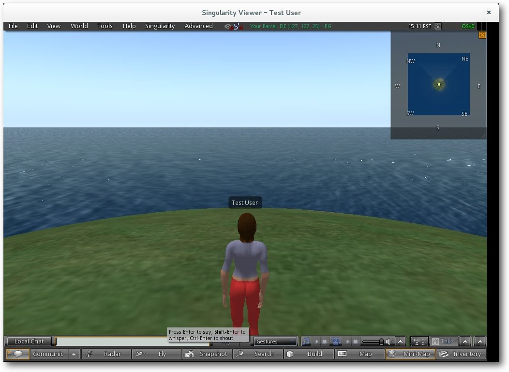Mit dem Singularity Viewer auf dem OpenSimulator localhost.
Mittlerweile gibt es nicht nur dutzende Welten, wie beispielsweise die Quizwelt Marble Isle [8], sie erlauben auch den gegenseitigen Zugang.
Fremde Hardware
Dass es nicht zwangsläufig eine schlechte Idee ist, für VR-Software auch VR-Hardware zu verwenden, zeigt CtrlAltStudio mit ihrem Viewer [9]. Dieser steht als Alphaversion zur Verfügung und unterstützt unter proprietären Betriebssystemen (Windows und Mac OS X) immerhin schon mal proprietäre Hardware wie das Oculus Rift [10]). Von Unterstützung für freie VR-Hardware, eben wie beispielsweise Google Cardboard, ist leider noch nichts zu sehen. Links[1] https://www.google.com/get/cardboard/
[2] http://www.mesa3d.org/
[3] http://www.openscenegraph.org/
[4] http://www.crystalspace3d.org/
[5] http://opensimulator.org/
[6] http://www.mono-project.com/
[7] http://www.singularityviewer.org/
[8] http://www.marbleisle.com/
[9] http://ctrlaltstudio.com/viewer
[10] https://de.wikipedia.org/wiki/Oculus_Rift
| Autoreninformation |
| Jochen Stärk ist Jahrgang 1980, Wahlfrankfurter, Open-Source-Enthusiast und Autodidakt sowie bekennender Langweiler, Spießer und Hobbybürokrat. |
Beitrag teilen Beitrag kommentieren
Zum Inhaltsverzeichnis
Der Februar im Kernelrückblick
von Mathias Menzer Basis aller Distributionen ist der Linux-Kernel, der fortwährend weiterentwickelt wird. Welche Geräte in einem halben Jahr unterstützt werden und welche Funktionen neu hinzukommen, erfährt man, wenn man den aktuellen Entwickler-Kernel im Auge behält.Linux 4.5 entwickelt sich
4.5-rc3
Die Entwicklung von Linux 4.5 ging im Februar munter weiter, wobei man bei einem Blick in die Statistiken der dritten Entwicklerversion [1] den Eindruck gewinnen könnte, die Entwicklung liefe rückwärts: Der Kernel wurde um über 50000 Code-Zeilen verkleinert. Diese Situation ist eher ungewöhnlich, bläst doch die fortschreitende Entwicklung den Linux-Kernel eher weiter auf. Selbst wenn durch Aufräumarbeiten große Teile an Quelltext entfernt werden, ist fast immer die Zahl der hinzugekommenen Code-Teile größer. Diesmal rührt der vergleichsweise hohe Verlust an „Masse“ von der Entfernung dreier RDMA-Treiber [2] her. Um die Stabilität des Kernels braucht man sich dennoch nicht zu sorgen. Zum einen sind die entsprechenden Treiber bereits seit knapp sechs Monaten als „deprecated“ („überholt/veraltet“) gekennzeichnet, womit von ihrer Verwendung strikt abgeraten wird. Zum zweiten befanden sie sich seither im staging-Bereich, sodass man in der Zwischenzeit bemerkt hätte, wenn jemand statisch auf die Treiber oder ihre Bibliotheken gelinkt hätte. Im Endeffekt wird der normale Anwender hiervon keine negativen Auswirkungen spüren und Spezialnutzern hat man die Gelegenheit gegeben, darauf zu reagieren.4.5-rc4
Linux 4.5-rc4 [3] lieferte Torvalds sozusagen als Valentinstag-Geschenk ab. Das Volumen der Änderungen war zurückgegangen und diesmal wurde der Kernel-Code wieder etwas größer. Die Änderungen liefen zumeist unter der Kategorie „Fehlerkorrekturen“, von denen viele dem amdgpu-Treiber und der dazugehörigen Energieverwaltungskomponente „Powerplay“ zugute kamen. Weiterhin wurde ein kleines Skript aufgenommen, das insbesondere Entwicklern, die häufig den Linux-Kernel kompilieren und hierbei die Option CONFIG_LOCALVERSION_AUTO nutzen, ihr System wieder von Altlasten befreit. Diese Option hängt an den Namen für jedes Kompilat eine Versionsinformation an, die der Git-Versionsverwaltung entnommen wurde. Damit kann zwar leicht festgestellt werden, womit ein bestimmter Kernel gebaut wurde, jedoch erzeugt dies bei häufiger Verwendung einen großen Wust an Kernel-Abbildern und deren zugehörigen Bibliotheken auf der Festplatte. Das kleine Skript ./prune-kernel soll nun alle nicht von der eigenen Linux-Distribution installieren Kernel-Versionen finden und deren Hinterlassenschaften aus /boot und /lib entfernen. Derzeit ist dieses Skript jedoch auf RPM- basierte [4] Distributionen begrenzt.4.5-rc5
Bereits Samstags, dafür auch um einiges kompakter, erschien die fünfte Entwicklerversion [5]. Entsprechend fanden hier auch keine großen Umbrüche statt. Einer der umfangreichsten Änderungen ist am Code für die Interaktion mit dem BIOS-Nachfolger EFI [6] zu finden. Hier wurde die Überprüfung von Variablen überarbeitet, um Fehlern durch unterschiedliche Zeichenkodierungen vorzubeugen.4.5-rc6
Wieder etwas größer fiel Linux 4.5-rc6 [7] aus, der einen Tag später auch eine Schaltjahr-Version hätte werden können. Dessen vermutlich wichtigste Änderung wurde jedoch nur mit einem Neun-Zeilen-Patch eingebracht: Die Korrektur eines Fehlers im Code für große Speicherseiten (THP, „Transparent Huge Pages“). Eine Änderungen hieran hatte zu scheinbar zufälligen Abstürzen von Systemen der s/390-Architektur [8] geführt. Da darauf IBMs aktuelle Mainframes aufbauen, ist ein solcher Fehler trotz der vergleichsweise geringen Nutzerzahl nicht geeignet, den verantwortlichen Entwicklern einen guten Schlaf zu bescheren, befinden sich diese Systeme doch vorwiegend im Umfeld großer Unternehmen im Einsatz und stellen beispielsweise die Grundlage für den Betrieb von SAP-Installationen. Weiterhin kam ein Treiber hinzu, der Support für den Power-Management-Chip TPS65217x von Texas Instruments liefert. Dieser soll ARM-Prozessoren beim Umgang mit Lithium-Ionen-Akkus [9] zur Seite stehen und könnte in akkubetriebenen, tragbaren Geräten wie beispielsweise in Navigationsgeräten zum Einsatz kommen. Eine siebte Entwicklerversion plant Torvalds noch fest ein und sollte diese nicht erheblich weniger Änderungen aufweisen, wird er auch noch mindestens einen -rc8 nachschieben. Somit dürfte mit der Veröffentlichung von Linux 4.5 nicht vor Mitte März zu rechnen sein. Links[1] https://lkml.org/lkml/2016/2/7/266
[2] https://en.wikipedia.org/wiki/Remote_direct_memory_access
[3] https://lkml.org/lkml/2016/2/14/173
[4] https://de.wikipedia.org/wiki/RPM_Package_Manager
[5] https://lkml.org/lkml/2016/2/20/168
[6] https://de.wikipedia.org/wiki/Unified_Extensible_Firmware_Interface
[7] https://lkml.org/lkml/2016/2/28/207
[8] https://de.wikipedia.org/wiki/System/390
[9] https://de.wikipedia.org/wiki/Lithium-Ionen-Akkumulator
| Autoreninformation |
| Mathias Menzer (Webseite) behält die Entwicklung des Linux-Kernels im Blick, um über kommende Funktionen von Linux auf dem Laufenden zu bleiben und immer mit interessanten Abkürzungen und komplizierten Begriffen dienen zu können. |
Beitrag teilen Beitrag kommentieren
Zum Inhaltsverzeichnis
Typo3 im Einsatz
von Martin Stock Im Typo3 CMS-Artikel der Februarausgabe (siehe freiesMagazin 02/2016 [1]) ging es um eine Einführung in das Open Source Content Management System (CMS), dessen Installation und die Spracheinstellungen in Deutsch. Dieser Artikel beschreibt erste Tests und Einstellungen im Backend des Systems, das Erstellen von Seiten und ersten Inhalten.Das Installations-Tool
Um nach einer Installation des Systems erste Einstellungen vorzunehmen, muss man das Installations-Tool „Install tool“ aufrufen. Damit kann man zum Beispiel Admin-Passwörter oder Datenbankeinstellungen ändern, aber auch weitere Konfigurationen der Typo3-Installation durchführen, wenn es nötig ist. Um Zugriff auf das Installations-Tool zu erhalten, benötigt man kein Backend-Benutzerkonto. Denn das Werkzeug ist auch ohne eine Anmeldung ins Backend erreichbar: http://localhost/typo3/sysext/install/Start/Install.php Als Sicherheitsmechanismus greifen zwei verschiedene Vorkehrungen:- Eine leere Datei mit dem Namen ENABLE_INSTALL_TOOL, die im Ordner typo3conf abgelegt werden muss oder
- Ein Passwortschutz im Backend. Das Passwort ist unabhängig vom Backendzugang erstellt worden bzw. kann erneut erstellt werden.
Das Installations-Tool ist im Backend gesperrt.
Hinweis: Nachdem man in diesem Werkzeug die gewünschten Einstellungen vorgenommen hat, sollte die Entsperrungs-Datei entfernt werden! Als zusätzliche Sicherheit sollte man das allgemeine Passwort für das Installations-Tool ändern. Das Typo3 CMS Standardpasswort lautet „joh316“. Im Installations-Tool kann man das Passwort bequem im Bereich „Important actions“ neu eingeben und speichern. Im Installations-Tool kann man auch noch weitere Tests bezüglich von Darstellungen verschiedener Medien machen. Im Bereich „Test setup“ kann man testen, ob Bilder angezeigt und verarbeitet werden. Wenn in diesem Bereich keine Bilder angezeigt werden, dann wird auf der gesamten Webseite kein einziges Bild gerendert! Damit Bilder angezeigt werden können, benötigt Typo3 ein Bildbearbeitungsprogramm im Hintergrund. Dazu gehört zum Beispiel die Software ImageMagick [2]. Diese kann mit Dateitypen wie TIF, BMP, TGA, AI, PDF, JPEG, PNG, GIF und vielen mehr umgehen und sie weiterverarbeiten. Die Software hilft Typo3 CMS bei der Konvertierung, Kombinierung und Identifizierung von Bilddateien, die im CMS angezeigt werden können. ImageMagick muss auf dem jeweiligen Webserver installiert und aktiviert sein. Typo3 CMS setzt auch den safe_mode-Status voraus. In der php.ini-Datei muss bei safe_mode_exec_dir der Ordner angegeben sein, worin das Programm installiert wird. Ansonsten läuft es nicht! Zusätzlich benötigt Typo3 CMS GDlib [3]. Diese Software zeichnet Boxen und nutzt Truetype Fonts, um Bildtexte zu rendern. Es ist nützlich für Symbole, Grafiken für Menüs und den TypoScript Objekt Gifbuilder [4], welcher auf GDlib basiert und mit ImageMagick umgehen kann. Mit dem Gifbuilder kann man zum Beispiel grafische Menüs erstellen. Tabellen und die dazugehörigen Felder der Datenbank lassen sich im Installations-Tool beim Punkt „Database Analyzer“ mit den von Typo3 CMS angelegten Tabellen und Feldern vergleichen. Dann kann man diese Daten, die nicht mehr benötigt werden, entfernen und neue hinzufügen. Ist nichts da zum Vergleichen, gibt es eine positive Meldung mit grünen Hintergrund! Dies sollte man nach einer Installation des Systems oder von Erweiterungen durchführen, damit das System keine Probleme verursacht. Mögliche Fehlermeldungen im Installations-Tool (im Bereich „Folder Structure“) sind:
- Path/index.php is not a link: Hat man sein System mit Symlinks aufgebaut, ist meistens die index.php im Verzeichnis ein Symlink zur index.php im typo3_src-Ordner. Manche Webhoster aber erlauben keine Symlinks und die index.php muss eine echte (reguläre) Datei sein.
- Default File permissions (BE/fileCreateMask): Die standardmäßige Zugriffsberechtigung auf solche Dateien wird mit 0665 abgegeben. Diesen Wert kann man im Installations-Tool im Bereich „All Configuration“ auf 0660 setzen, und die Fehlermeldung verschwindet.
- Default Directory permissions (BE/folderCreateMask): Der Standardwert des Systems ist hier 2775. Eine Abänderung ebenso im Bereich „All Configuration“ des Installations-Tools auf 2770 behebt die Fehlermeldung.
Typische Fehlermeldungen des Installations-Tools.
Ein System-Update führt man mit dem „Update Wizard“ durch. Das System vergleicht dann angelegte Dateien mit denjenigen auf dem Server. Wenn man sich durch diesen halbautomatischen Prozess durchgeklickt hat, sollte das System aktuell sein. Vorher sollte man natürlich ein Backup seiner Daten auf dem Server und in der Datenbank vornehmen.
Inhalte anlegen
Um Inhalte erstellen zu können, wird der „Seitenbaum“ benötigt. Diesen findet man zwischen der linken Menüspalte und dem rechten Arbeitsfenster des CMS. Wenn man sich auf der Startseite des Backends befindet, klickt man auf den Link „Seite“. Daraufhin öffnet sich eine weitere linke Spalte, in der der Seitenbaum hierarchisch angeordnet wird. Zunächst sieht man die Bezeichnung des CMS und darunter gar nichts. Das liegt daran, dass noch keine Seiten erstellt worden sind. Diese kann man aber mit Hilfe der Symbole im oberen Bereich des zukünftigen Seitenbaumes anlegen. Dort sieht man ein Symbol, das so aussieht wie ein Blatt mit einem Plus-Zeichen darin. Klickt man darauf, öffnen sich darunter die verschiedenen Seitentypen, die zur Auswahl stehen. 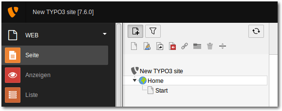Großaufnahme des Symbols zum Erstellen einer neuen Seite.
Folgende Symbole stehen zur Verfügung:
- Standard-Seite: Dies ist der Typ einer Seite, der am häufigsten vorkommt. Dort kann man seine Seiteninhalte speichern, die Seite im Menü verstecken oder die Seite deaktivieren. Man kann darunter Unterseiten anlegen.
- Backend-Benutzer-Bereich: Dieser Seitentyp ist ausschließlich für angemeldete Backend-Benutzer zugänglich und wird auch nicht in einem Menü im Frontend der Webseite angezeigt. Man kann es als Entwurfsseiten der Administratoren nutzen oder als extra Seiten mit eigenen Inhalten.
- Verweis: Es erzeugt einen Link zu einer bestimmten oder mehrerer Seiten im Seitenbaum, die ein Verweis sein sollen. Zum Beispiel ein Verweis einer „Root“-Seite zu einer „Standard“-Seite.
- Einstiegspunkt: Hier werden Unterseiten verknüpft, die an einer bestimmten Stelle im Seitenbaum liegen und für andere Seiten als Einstieg gelten sollen.
- Link zu externer URL: Eine Verlinkung zu einer anderen Webseite.
- Ordner: Dienen als Verzeichnis und Speicherplatz von Erweiterungen und globalen Inhalten, die zum Beispiel per TypoScript in ein Template angewendet werden, um auf allen oder einigen Seiten dargestellt zu werden. Es gibt noch die sogenannten „Sys-Ordner“ (System-Ordner), die beispielsweise Daten von Frontend-Besucher speichern.
- Papierkorb: Diesen Seitentyp darf man nicht mit einem reinen Mülleimer verwechseln. Ist der Papierkorb im Backend aktiviert, werden dort alle gelöschten Inhalte und Daten gesammelt. Hat man bestimmte Inhalte zu früh oder aus Versehen gelöscht, kann man diese über den Papierkorb wiederherstellen. Es lohnt sich, regelmäßig in den Papierkorb zu schauen und diesen aufzuräumen.
- Trennzeichen für das Menü: Man kann damit in einem sehr großen Seitenbaum und dessen Menü optische Trennlinien einfügen, um etwas mehr Struktur und Übersicht zu geben.
Die Einstellungen für die Root-Seite.
Damit die Seiten-Templates bei allen Unterseiten ausgewählt werden können, muss die Root-Seite ein Verweis zu einer Standard-Seite werden. Es kann jede Seite sein, aber zur besseren Übersicht nimmt man die Startseite. Dazu klickt man im Reiter „Allgemein“ in das Auswahlmenü bei „Seitentyp“ und wählt den Punkt „Verweis“ aus. Das Ziel des Verweises stellt man darunter ein, indem man neben das leere Textfeld auf das „Ordner“-Symbol klickt. Es erscheint der Seitenbaum in einem Extrafenster. Dort klickt man auf die „Startseite“ und diese wird als Verweis ausgewählt. 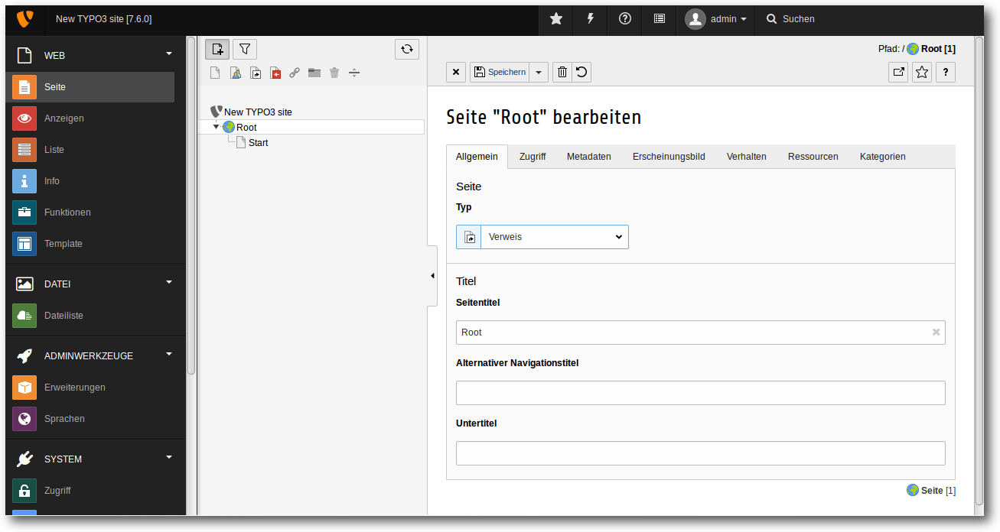
Einrichten des Verweises für die Root-Seite.
Hinweis: Auf der Root-Seite werden keine Seiteninhalte eingegeben. Nur bei den Standard-Seiten werden Inhaltselemente abgelegt. Hat man bisher keine Standard-Seite eingerichtet, sollte man dies spätestens jetzt nachholen. Um solch eine Seite zu erstellen, geht man genauso vor wie bei der Erstellung der Root-Seite. Mit dem Mauszeiger geht man auf das Symbol der „Standard“-Seite und zieht mit gedrückter Maustaste die Seite unter die Root-Seite. Dann kann man wieder in dem Eingabefeld den Seitennamen anpassen und über die Seiteneigenschaften die Seite aktivieren. Tipp: Wenn man in der Baumstruktur mit der rechten Maustaste auf das Symbol links neben dem Namen der Webseite klickt, öffnet sich ein Kontextmenü, über welches einen Eintrag zum Bearbeiten der Seiteneigenschaften anbietet. Auch andere Einstellungen lassen sich auf diese Art und Weise erreichen und ändern. Dort kann man auch direkt eine Seite ohne Umwege aktivieren! Um weitere Konfigurationen, zum Beispiel für Erweiterungen wie Nachrichten oder eine Bildergalerie, vorzunehmen, wird noch ein Ordner mit dem Namen „Speicher“ angelegt. Zur besseren Übersicht kann man für jede Erweiterung, die man nutzt, jeweils einen Extraordner einrichten und dort die Daten sammeln. Aber man kann auch alles in einem Ordner ablegen. Es ist reine Geschmackssache! Wie kommen nun die Inhalte auf die jeweiligen Seiten? Klickt man im Seitenbaum auf eine Seite, hier zum Beispiel die „Startseite“, erscheint im rechten Fenster unter anderem ein Symbol, das „Inhalt“ genannt wird. Klickt man darauf, wird man an die verschiedenen Inhaltselemente, die Typo3 CMS allgemein anbietet, weitergeleitet. 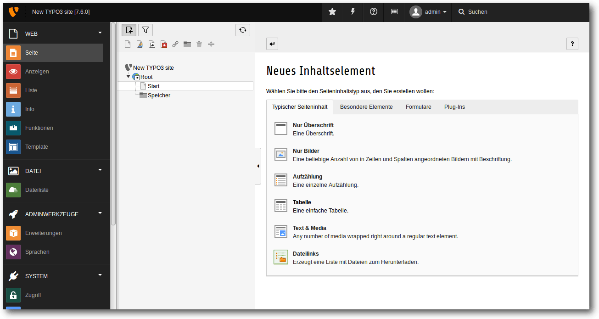
Die möglichen Inhaltselemente einer Typo3-Seite.
Als erste Elemente kommen die „Typischen Seiteninhalte“. Dort findet man folgende Elemente:
- „Überschrift“: Man kann nur eine Überschrift schreiben
- „Nur Bilder“: Wie zu erwarten ist dies das Element, das nur Bilder zulässt
- „Auflistung“: Listenpunkte erstellen
- „Tabelle“: Tabellen erstellen
- „Text & Media“: Texte und Bilder, sowie weitere Multimedia-Dateien einbinden
- „Dateilinks“: Zum Erstellen einer Dateiliste für Downloads
- „Dateilinks“: Damit erstellt man eine Dateiliste für Downloads
- „Spezielle Menüs“: Menüs erstellen
- „HTML“: Hier wird reines HTML eingebunden
- „Trenner“: Optischen Trenner erstellen
- „Andere Inhalte“: Hier werden andere Inhaltselemente eingefügt.
- „Login-Form“: Login/Logout-Formular für Frontend-Benutzer der Webseite
- „E-Mail-Formular“: Erstellung eines Kontaktformulars für die Frontend-Benutzer.
Das Einfügen eines Text- und Medien-Elements.
Danach folgt der „Subheader“, der wie ein Einleitungsabsatz sein kann, den man auch zu Beginn anderer Artikel im Blog-Bereich finden kann, um den potenziellen Leser eine kleine Übersicht des Artikels geben kann. Das folgende Feld ist dann das Texteingabefeld für den Artikel, den man schreiben möchte. Es ist vergleichbar einfach zu bedienen wie das Verfassen einer E-Mail. Das geschieht ganz einfach über einen „What You See Is What You Get (WYSIWYG)-Texteditor“, der auch schon in den Grundeinstellungen des CMS vorinstalliert ist. Ist man mit dem Schreiben des Textes fertig, speichert man die Änderungen indem man im oberen Bereich des rechten Fensters das Disketten-Symbol anklickt. Dann wird alles gespeichert und die Seite lädt das Formular neu. Die Diskette mit einem Kreuz als Zusatz schließt die aktuelle Übersicht nach dem Speichervorgang und man befindet sich in der Hauptübersicht der Seiteninhalte.
Welche weiteren Möglichkeiten gibt es für Seiteninhalte noch?
Die Reiterkartei „Zugriff“ regelt den Zugriff auf das jeweilige Inhaltselement. Man kann entscheiden, welcher Benutzer oder welche Benutzergruppe den Artikel lesen darf, wann der Inhalt veröffentlicht wird und zu welchem Zeitpunkt es wieder entfernt werden soll. Es kann deaktiviert, im Menü (falls vorhanden) versteckt werden oder den Link zum Seitenanfang anfügen. Der Tab „Erscheinungsbild“ hilft einem beim Erstellen des Designs, falls eines für das Inhaltselement angelegt wurde und in „Kategorie“ kann man den Inhalt einer Kategorie zuweisen. Tipp: Im gesamten Backend-Bereich gibt es Hilfetexte, die einem die Arbeit und das Verstehen mit Typo3 CMS verständlicher machen. Diese erkennt man an den „Fragezeichen“-Symbolen. Auch benötigt man nie alle Felder oder Einstellungen, um mit dem System zu arbeiten. 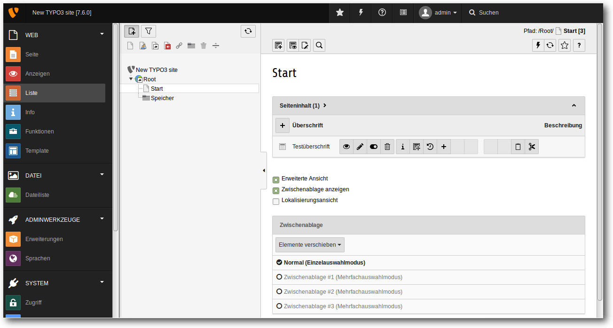Die erweiterte Ansicht ermöglicht viele weitere Einstellungen.
Hilfreich ist auch die „Erweiterte Ansicht“, die man global für alle Seiten aktivieren kann. Dazu geht man auf irgendeine Seite im Seitenbaum. Im rechten Fenster findet man im unteren Bereich der Inhaltselemente den Punkt „Erweiterte Ansicht“. Dort klickt man darauf und schon werden neben den Inhaltselementen viele weitere Bearbeitungsmöglichkeiten angezeigt. Links
[1] http://www.freiesmagazin.de/freiesMagazin-2016-02
[2] http://www.imagemagick.org/script/index.php
[3] https://libgd.github.io/
[4] https://wiki.typo3.org/GIFBUILDER
| Autoreninformation |
| Martin Stock freut sich über neue Webseiten mit Typo3 CMS. |
Beitrag teilen Beitrag kommentieren
Zum Inhaltsverzeichnis
Moneyplex 16 Business
von Mirko Lindner Die Banking-Software Moneyplex [1] geht nach knapp drei Jahren Wartezeit in die nächste Runde: Moneyplex 16 bringt neben einer erneuerten Oberfläche diverse neue Funktionen mit. Neu ist unter anderem die Implementation der photoTAN- und pushTAN-Verfahren, Multiselektion und Multiändern von Zahlungen und eine Anzeige der unterstützten Geschäftsvorfälle eines Kontos. Redaktioneller Hinweis: Der Artikel „Moneyplex 16 Business“ erschien erstmals bei Pro-Linux [2].Allgemein
Auch unter Linux gehört Online-Banking vom heimischen Computer aus genauso zum Alltag wie das versenden von E-Mails oder die Arbeit mit Texten. Laut einer nicht repräsentativen Umfrage auf Pro-Linux vom März 2014 [3] vertrauten über 80 Prozent der Teilnehmer ihre Bankgeschäfte einer Software an. Der größte Teil der Anwender setzte dabei auf die Weblösungen der jeweiligen Banken. Setzen die Nutzer allerdings eine dedizierte Software ein, so entscheiden sich viele für Moneyplex, eine proprietäre Lösung des Frankfurter Unternehmens Matrica GmbH. Die Gründe für die Nutzung einer dedizierten Software sind naheliegend. So können die Daten beliebig archiviert, verarbeitet oder aber auch nach einem Wechsel der Bank weiter genutzt werden – Online-Lösungen sind eher limitiert und erlauben in den seltensten Fällen beispielsweise die Nutzung von Alternativbanken. Anwender einer Offline-Lösung behalten deshalb einen Überblick über ihr gesamtes Vermögen und brauchen nicht jede Webseite separat anzusteuern. Durch die Unterstützung moderner Sicherheitstechnologien, wie beispielsweise einer Kartenauthentifizierung, bietet die Software zudem guten Schutz vor Gefahren wie Phishing oder Trojanern. Funktionell brauchen sich Offline-Lösungen im direkten Vergleich zu Online-Seiten der Banken nicht zu verstecken. Über eine übersichtlich strukturierte Oberfläche hat der Anwender die Möglichkeit, die kompletten Geschäfte mit einer oder mehreren Banken zu verwalten. Einmal angemeldet kann er Überweisungen vornehmen, Daueraufträge einrichten, Finanzen auswerten oder Aktenwerte prüfen. Auch Umbuchungen, Splitbuchungen, Geldflussanzeige und Kontoauszüge sind mit Applikationen wie Moneyplex möglich.Installation und Einrichtung
Mit der Freigabe der Version 16 hat Matrica seine Finanzverwaltungssoftware knapp drei Jahre nach der letzten Hauptversion einem Update unterzogen. Was sich nach einer langen Entwicklungszeit anhört, relativiert sich, wenn man bedenkt, dass die Frankfurter das mittlerweile in die Jahre gekommene Moneyplex 12 auch nach der Freigabe stetig gepflegt und teilweise auch im Zuge regulärer Updates um neue Funktionen ergänzt haben. Große Eile scheint das Unternehmen deshalb mit der Veröffentlichung nicht gehabt zu haben. Wie schon Moneyplex 12 wird auch die neue Version mit einem separaten Installer ausgeliefert und eingerichtet. Das Programm fragt den Ort der Installation ab und richtet die Anwendung, je nach Installation, im Home-Verzeichnis des Nutzers ein. Im selben Verzeichnis finden sich später auch in diversen Unterverzeichnissen auch die Bankdaten sowie die Datenbanken und Backups. 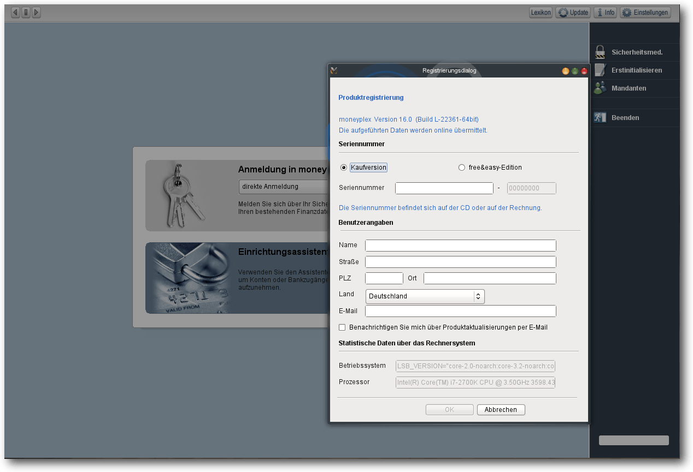Installation und Registrierung.
Nach dem ersten Start fragt Moneyplex die Daten des Nutzers ab. Hier kann er auch entscheiden, welche Edition er installieren will – entweder durch die Auswahl einer kostenlosen, aber limitierten „free&easy“-Variante, oder durch die Eingabe einer Seriennummer. Je nach Nummer aktiviert der Anwender „Moneyplex Standard“, „Moneyplex Pro“ oder „Moneyplex Business“. Die Unterschiede der Editionen sind mannigfaltig. Während die Standardversion für einen Mandanten konzipiert wurde, unterstützt die Pro-Version zwei Mandanten und fortschrittliche Depot- und Wertpapierverwaltung. Die Business-Version kommt dagegen auch mit Funktionen wie Sammelüberweisungen, Sammellastschriften und DTAUS und ist, wie der Name bereits suggeriert, an Geschäftstreibende gerichtet. Nutzt der Anwender fürs Online-Banking eine HBCI-Chipkarte und will er sie zusammen mit einem passenden Kartenleser einsetzen, ist das direkt in der Anwendung einzurichten. Moneyplex unterstützt gängige Kartenleser mit PC/SC und CTAPI-Schnittstelle, inklusive solcher, die ein Authentifizieren über ein eigenes Tastenfeld oder einen Fingerabdrucksensor für biometrische Erkennung zulassen. Neben den bereits unterstützten Verfahren wie HBCI mit PIN/TAN, Chipkarte, Diskette oder USB-Stick, iTAN, mTAN, eTAN, Smart-TAN (Plus), optic-TAN, SMS-TAN und ChipTAN-Comfort sind in der neuen Version 16 nun auch die photoTAN- und pushTAN-Verfahren hinzugekommen. Bei den beiden Verfahren handelt es sich um moderne TAN-Verfahren, die das Online-Banking sicherer machen sollen. Beide Verfahren benötigen kein separates Gerät, sondern können mit Smartphone oder einem Tablet genutzt werden. Sind die Hardware und die Verbindung zur Außenwelt eingerichtet, ist es an der Zeit, einen Mandanten und die dazugehörenden Bankzugänge zu erstellen. Entsprechende Assistenten erleichtern dabei sowohl die eigentliche Einrichtung wie auch die Zuordnung der Konten. Die Assistenten fragen unter anderem die nötigen Bankdaten ab und richten die für das Online-Banking freigeschalteten Konten weitgehend autark ein. Zudem ist es möglich, ein PayPal-Konto direkt in der Software zu nutzen, um beispielsweise Transaktionen oder Kontobewegungen besser überblicken zu können. Alternativ lässt sich auch ein Beispielkonto erstellen, will man sich erst mit der Funktionsweise der Anwendung vertraut machen und nicht mit realen Bankdaten hantieren. 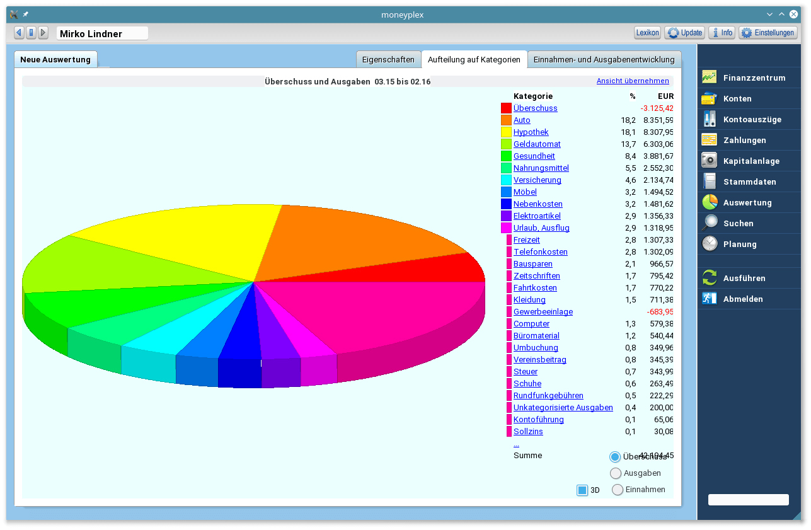
Auswertung der Kontobewegungen.
Benutzung
Bereits beim ersten Aufruf fällt die veränderte Oberfläche der neuen Version auf. Anwender der alten Version brauchen aber keine Angst zu haben, denn auch die neue Version punktet durch ein ausgesprochen anwenderfreundliches – wenn auch ungewöhnliches – Bedienkonzept. So lässt sich die Software auch ohne Studium des Handbuchs intuitiv nutzen. Charakteristisches Merkmal der Benutzeroberfläche ist dabei die am rechten Rand angeordnete Navigationsleiste, über die alle Funktionen angesteuert werden. Dreh- und Angelpunkt der Anwendung ist das Finanzzentrum. Die Seite bietet einen guten Überblick über die finanzielle Situation des Mandanten, aber auch über die Geschehnisse auf dem Markt. Die von Moneyplex „Ansichten“ genannten Dashboard-Komponenten lassen sich umsortieren, an die eigenen Wünsche anpassen oder aber um weitere Informationen ergänzen. Der Besuch der Seite nach einer Konto-Aktualisierung liefert deshalb immer einen recht ordentlichen Überblick über die eigene Finanzsituation. 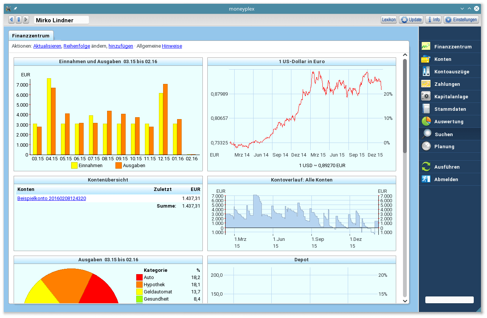Finanzzentrum.
Direkt nach dem Finanzzentrum folgt der wohl interessanteste Bereich der Anwendung: Kontolisten und die Detailansicht der Kontobewegungen. Während sich unter Konten ab der Version 16 unter anderem auch die unterstützten Geschäftsvorfälle auflisten lassen, fasst der Bereich „Kontoauszüge“ in einer tabellarischen Form weiterhin alle Bewegungen eines Kontos in einem „Kontobuch“ zusammen. Zudem lassen sich hier einer Buchung Kategorien hinzufügen, die wiederum später für eine Auswertung genutzt werden können. Seit der Version 16 unterstützt Moneyplex auch die Möglichkeit, mehrere Einträge des Kontobuchs zu ändern. Neu ist auch die Möglichkeit, ausgewählten Buchungen Anhänge, wie beispielsweise Rechnungen oder wichtige Informationen, hinzuzufügen. Zudem lassen sich bei den elektronischen Auszügen auch manuell Kontoauszüge oder Dokumente hinterlegen. Dazu reicht es, eine Buchung zu markieren und ihr mit der rechten Maustaste ein Dokument hinzuzufügen. Weiterhin bietet die Software wie gehabt die Möglichkeit an, automatisch elektronische Kontoauszüge zu empfangen. Das funktioniert freilich nur, sofern die Bank diesen Geschäftsvorfall auch unterstützt. 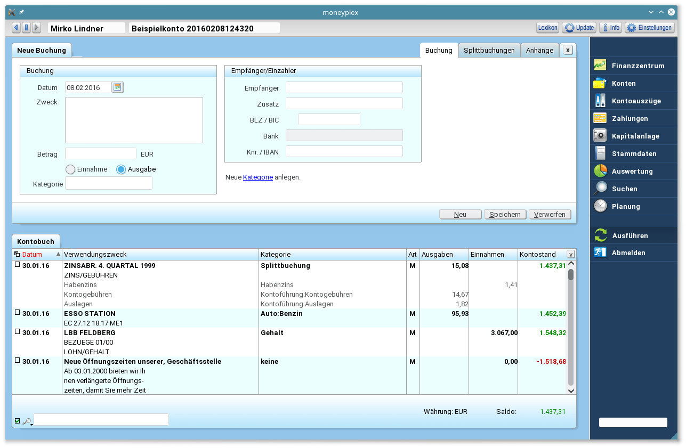
Kontobuch.
Im Bereich Zahlungsverkehr kann der Anwender neben Überweisungen auch Terminüberweisungen, Daueraufträge, Lastschriften, Terminlastschriften oder Auslandsüberweisungen verwalten. Maßgeblich für die angebotenen Leistungen ist allerdings nicht nur die Edition der Anwendung, sondern auch die Funktionen der Bank – nicht jede Bank und jedes Konto bieten dieselben Funktionen an. Zudem lassen sich in der Anwendung ab der Pro-Version auch Kapitalanlagen, wie Aktien, verwalten. Dabei können HBCI-Depots automatisch in die Anwendung übernommen werden – ab der Version 16 auch das DekaBank-Depot der Sparkassen. Doch auch nicht unterstützte Typen lassen sich problemlos in die Depotverwaltung einbinden – sie müssen dann aber manuell gepflegt und über Zu- und Abgänge informiert werden. Belohnt wird man bei einer gewissenhaften Pflege der Bank- und Depot-Daten mit einer grafischen Auswertung, die nur wenige Wünsche offen lässt. Katalogisierte Ein- und Ausgaben lassen sich über Konten und Zeiträume hinweg zusammenfassen und in verschiedenen Darstellungsarten visualisieren. Ab der aktuellen Version ist es zudem möglich, die Beitragsart festzulegen und einen Umsatzausdruck des Vormonats, Vorjahres oder Quartals zu generieren. Bereits seit geraumer Zeit ist die Anwendung auch in der Lage, eine Geldflussprognose zu berechnen, die unter anderem wiederkehrende Einnahmen und Zahlungen berücksichtigt. 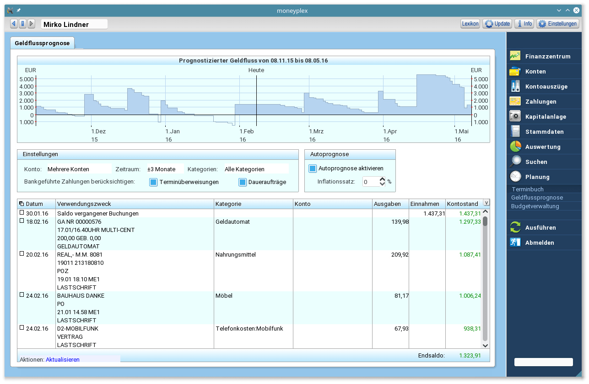
Geldflussprognose.
Fazit
Moneyplex 16 gibt auch in der Neuauflage eine überzeugende Figur ab. Die neue, in modernen Farben und Formen gehaltene Oberfläche überzeugt genauso wie die leichte und intuitive Bedienung. Die Anwendung unterstützt in der Version 16 alle relevanten Sicherheitsverfahren und kommt mit den meisten Banken und Rechenzentren klar. Die gelungenen Assistenten, die strukturierten Übersichten und die Auswertungsmöglichkeiten erlauben auch Neulingen, ihre Konten schnell und effizient unter Linux zu verwalten. Die getestete Business-Version verhielt sich stabil und bereitete keine Probleme. Sowohl die Anbindung externer Kartenleser als auch der reguläre Betrieb mit einem Bankkonto verliefen komplett störungsfrei. Einzig die Einbindung eines PayPal-Kontos wurde mit einem ungültigen Passwort abgebrochen, was allerdings auf ein geändertes API von PayPal zurückzuführen war. Ob es als Privatanwender allerdings die Business-Variante sein muss, darf angezweifelt werden. Sie bietet für Heimnutzer teils unnötige Funktionen und ist mit 139,90 Euro sicherlich kein Schnäppchen. Die kostenlose Version könnte dagegen für viele Anwender zu limitiert sein, weshalb die meisten Anwender wohl die kostenpflichtige Standard- (49,90 Euro) oder Pro-Version (59,90 Euro) bevorzugen werden. Anwender, die bereits Moneyplex 12 einsetzen, können im Zuge eines Updates auf die neue Version wechseln. Links[1] http://www.matrica.de/produkte/produktmpx1.html
[2] http://www.pro-linux.de/artikel/2/1817/moneyplex-16-business.html
[3] http://www.pro-linux.de/umfragen/2/196/welche-bankensoftware-nutzen-sie-unter-linux.html
| Autoreninformation |
| Mirko Lindner (Webseite) befasst sich seit 1990 mit Unix. Seit 1998 ist er aktiv in die Entwicklung des Kernels eingebunden und verantwortlich für diverse Treiber und Subsysteme. Daneben ist er einer der Betreiber von Pro-Linux.de. |
Beitrag teilen Beitrag kommentieren
Zum Inhaltsverzeichnis
XCOM 2 – Der Widerstand
von Arndt Wiechens Strategieveteranen erinnern sich sicher noch gern an das 1994 veröffentlichte „UFO: Enemy Unknown“. Der Titel von Microprose sowie auch die direkten Nachfolger hinterließen durchaus große Fußstapfen. In diese tritt seit der Veröffentlichung von „XCOM: Enemy Unknown“ im Jahre 2012 das Studio Firaxis Games [1] mit einigem Erfolg. Am 5. Februar 2016 ist nun der Nachfolger „XCOM 2“ [2] als Day-One-Release auch für SteamOS/Linux erschienen. Das Spiel wurde, wie schon der Vorgänger, von Feral Interactive [3] portiert.Geschichte
Es ist zwanzig Jahre her seitdem die Regierungen der Welt vor den außerirdischen Invasoren kapituliert haben. Das aus dem vorherigen Serienteil bekannte XCOM-Projekt wurde zerschlagen und die ADVENT-Organisation beherrscht den Planeten. Die Aliens halten die Menschheit durch Propaganda und ihren technischen Fortschritt unter Kontrolle. Wer zweifelt und sich widersetzt, wird eliminiert.Die moderne Welt wird durch den ADVENT regiert.
Wer in entlegenen Gegenden lebt und sich versteckt hält, kann sich dieser Kontrolle teilweise entziehen, aber muss dafür in ständiger Furcht vor Entdeckung und Auslöschung leben. Diese Aussätzigen bilden die Keimzelle für den sich langsam formierenden Widerstand. Einige XCOM-Veteranen sind noch unter ihnen und versuchen sich gegen die übermächtigen Besatzer aufzulehnen und die Menschheit zu befreien. Nachdem die Aliens im direkten Vorgänger eigentlich besiegt wurden, spielt „XCOM 2“ in einer besetzten Welt. Dieser Story-Bruch schadet der guten Präsentation der Geschichte aber nicht. Die neue Stellung der XCOM als Widerstandskämpfer hat seinen Reiz und bietet die Grundlage für interessante Aufträge.
Gameplay
Wer „XCOM: Enemy Unknown“ gespielt hat, wird sich gleich wie Zuhause fühlen. Die taktischen Rundenkämpfe spielen sich fast wie im Vorgänger. Eine kleine Gruppe aus handverlesenen Spezialisten wird in den Kampf mit den Besatzern geführt. Frische Soldaten gehen als Rekruten in die Missionen und bekommen nach Erfolgen im Kampf eine Aufwertung. Bei der Beförderung entscheidet sich nun der weitere Karriereverlauf der einzelnen Soldaten. Werden sie etwa zum Scharfschützen, bekommen sie ein entsprechendes Gewehr und können Feinde aus einiger Entfernung unter Beschuss nehmen. Die sogenannten Spezialisten haben eine fliegende Drohne im Schlepptau, welche im Kampf aber auch bei der Heilung von Kameraden hilfreich sein kann. Weiterhin gibt es beispielsweise auch einen Nahkampfexperten. Dieser teilt mit seinem auf dem Rücken befestigten Schwert große Mengen an Schaden aus aber muss dafür natürlich auch direkt an den Gegner heran. Eine storybedingte Neuerung ist, dass man zu Beginn vieler Missionen noch vor feindlichen Trupps verborgen bleibt. Dies kann genutzt werden, um die eigenen Soldaten in eine perfekte Angriffsposition zu bringen und dann einen massiven Überraschungsangriff zu starten. Durch eine teils begrenzte Rundenanzahl in diversen Missionen kann dieser Vorteil leider nicht immer genutzt werden. Die Kämpfe sind serientypisch fordernd, aber dabei nie wirklich unfair. Es kann aber durchaus vorkommen, dass man regelmäßig Soldaten verliert. Die Gegner teilen ordentlich aus und man hat hin und wieder das Gefühl, dass die eigenen Mitstreiter etwas besser zielen könnten.Auf der Taktikkarte werden Untersuchungen angestellt und Missionen gestartet.
Neben den Missionen im Rundenmodus gibt es als zweiten großen Spielbereich den Ausbau der eigenen Basis. Hier wollen Forschungen zum Beispiel durch das Sezieren von erbeuteten Feinden vorangetrieben werden. Um dieses zu beschleunigen werden Wissenschaftler benötigt. Diese können beispielsweise durch Rettungsmissionen dem eigenen Team hinzugefügt werden. Auch müssen neue Soldaten rekrutiert oder Räumlichkeiten gebaut werden. Um Platz für diese neuen Räume zu erschließen und diese letztendlich auch zu bauen, werden Ingenieure benötigt. Viele verschiedene Aufgaben wollen erledigt werden und dabei muss immer auf die knappen Ressourcen und die Stromversorgung geachtet werden. Durch die Erweiterung der Basis werden immer neue Verbesserungen freigeschaltet, welche die eigenen Soldaten im Kampf aufwerten und es somit leichter machen, den immer gefährlicheren Gegnern gegenüber zu treten. Sehr gut war unter SteamOS die Unterstützung des Steam Controllers (siehe freiesMagazin 02/2016 [4]. Vermutlich wurde das Spiel sogar auf die Bedienung mit einem Controller optimiert. Dieses Gefühl äußerte sich allerdings auch schon im vorherigen Serienteil.
Missionen gibt es rund um den Planeten zu absolvieren.
Grafik
Grafisch hat „XCOM 2“ im Vergleich zum Vorgänger einen nicht allzu großen Sprung gemacht. Das Spiel, welches auf einer aufgebohrten Unreal-3-Engine basiert, sieht in maximalen Details gut aus aber könnte mit der aktuellen Unreal-Engine sicher noch besser aussehen. Ein aktuell noch sehr großes Problem ist die Performance. Auf den Testsystemen (DIY Steam Machine mit 16GB RAM und Laptop mit Intel Core i7, 16GB RAM, GeForce GTX 960M 4GB) lief das Spiel in FullHD und mittleren Details nicht wirklich gut und schwankte permanent zwischen 16-30 FPS. Hier muss seitens Feral Interactive definitiv noch nachgebessert werden. Es macht keinen guten Eindruck, wenn ein Spiel nach dem Erscheinen so schlecht läuft. Bei einem Shooter wäre dies ein Grund von einem Kauf abzuraten. Da es sich bei „XCOM 2“ aber um ein Rundenstrategiespiel handelt, fällt die eher durchwachsene Framerate nicht so stark ins Gewicht.Sound
Als sehr stimmig und zum Thema des Spiels passend muss der Soundtrack und die allgemeine Sounduntermalung bezeichnet werden. Die Musikuntermalung ist zu keinem Zeitpunkt negativ aufgefallen und hat sich immer ins Geschehen eingefügt. Auch die Sprecher machen einen stets guten Job in der getesteten, deutschen Version. Hervorzuheben ist hier auch, dass die Soldaten das Geschehen in ihrer jeweiligen Landessprache kommentieren. Dies trägt sehr zur ohnehin schon guten Atmosphäre bei.Fazit
Mit „XCOM 2“ hat Firaxis Games einen würdigen Nachfolger zu „XCOM: Enemy Unknown“ erschaffen. Das Spiel kann, bis auf die aktuellen technischen Schwächen, absolut überzeugen und ist ein neuer Toptitel für SteamOS/Linux. Links[1] http://www.firaxis.com/
[2] https://xcom.com/de
[3] http://www.feralinteractive.com/
[4] http://www.freiesmagazin.de/freiesMagazin-2016-02
| Autoreninformation |
| Arndt Wiechens (Webseite) nutzt Linux nach ersten Suse-Erfahrungen als Haupt-Betriebssystem seit 2014. Beruflich arbeitet er als SAP-Entwickler und hat auch mit Linux-Servern zu tun. |
Beitrag teilen Beitrag kommentieren
Zum Inhaltsverzeichnis
Humble Indie Bundle 16: Neun Spiele für Linux
von Dominik Wagenführ Noch bis zum 8. März 2016 gibt es das „Humble Indie Bundle 16“ [1] mit zahlreichen Spielen für Linux, Mac OS X und Windows zum Download. Die Spiele sind alle DRM-frei, wobei es auch Steam-Versionen gibt, und den Preis kann man selbst bestimmen. Nach dem Ende der Humble-Aktion stehen die meisten Spiele auch bei Steam oder im Humble Store zum regulären Kauf bereit.Die Spiele im Detail
Retro City Rampage DX
Retro City Rampage DX [2] von Vblank Entertainment spielt sich ein bisschen wie Grand Theft Auto [3] im Retro-Look. In einer offenen Welt, die in den 1980er Jahren angesiedelt ist, kann man Autos stehlen, durch die Stadt cruisen und Missionen erfüllen. Ob Schießereien mit der Polizei oder im Panzer Autors zermahlen … Daneben gibt es noch nette Referenzen auf andere Spiele wie Commando, Super Mario und mehr. Die Grafik ist sehr retro, das heißt pixelig, und auch die Musik kommt nicht mit orchestralen Klängen, sondern 8-bit daher. Das gefällt nicht jedem, auch wenn es sicherlich einen gewissen Charme hat. Das Spiel gibt es als 32- und 64-Bit-Version und steht sogar in deutscher Sprache zur Verfügung. 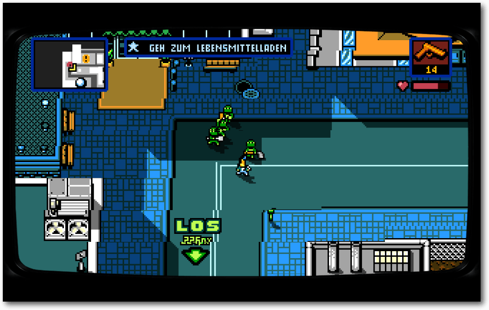Retro City Rampage DX – verfolgt von vier Schildkröten.
Outlast
Das Horror-Adventure Outlast [4] von Red Barrels Games war bereits im Humble Indie Bundle 14 [5] enthalten. Als Journalist Miles Upsher versucht man hinter das Geheimnis der Nervenheilanstalt Mount Massive zu kommen. Bei Nacht und bei Regen verschafft man sich unerlaubten Eintritt in die Anstalt und nur mit einer Videokamera bewaffnet stellt man sich dem Horror des Hauses. Das Spiel ist sehr düster und unheimlich (hier ein schönes React-Video [6]) und steht mit deutscher Sprache für 32-Bit- und 64-Bit-Systeme zur Verfügung.Outlast.
Never Alone
In Never Alone [7] übernimmt man die Rolle des kleinen Iñupiat-Mädchens [8] Nuna, welches nach der Zerstörung ihres Dorfes den Weg zu ihrer Familie sucht. Mit Hilfe eines Polarfuchses springt und klettert man durch die eisige Welt und besteht zahlreiche Abenteuer. Abwechselnd kann man die Rolle von Nuna und des Fuches steuern, um Hindernisse zu überwinden und Rätsel zu lösen. Das Spiel sticht sowohl durch seine Geschichte, durch seine Bilder und die Musik hervor. Daneben gibt es zahlreiche Hintergrundinformationen und Videos zum Leben der Iñupiat und den unterschiedlichen Legenden des Volkes und Tieren in der Arktis. Das Spiel selbst hat deutsche Untertitel, die Hintergrundinformationen leider nicht. Zusätzlich zum Spiel gibt es auch noch die „Foxtales“-Erweiterung dazu.Never Alone.
Trine 3
Amadeus, Zoya und Pontius sind zurück! Nach Trine 1 (freiesMagazin 07/2011 [9]) und Trine 2 (freiesMagazin 06/2012 [10]) veröffentlichte Frozenbyte auch den dritten Teil [11] für Linux. Das Spielprinzip blieb dabei gleich: Man versucht die Kräfte aller drei Helden zu vereinen, um das Trine erneut zusammenzusetzen. Die Level sehen grafisch gut aus und auch die Musik begeistert. Neu ist, dass sich die Abenteurer in einer 3-D-Welt bewegen. „Trine 3“ liegt dabei auch in deutscher Sprache, d. h. inklusive deutscher Sprachausgabe, vor. Gespielt werden kann entweder allein oder im Kooperationsmodus vorm heimischen Bildschirm oder online. Interessant ist, dass der Patch zum Spiel gleich mitgeliefert wird, was die 3,4 GB Download des Hauptspiels aber nur um geringe 38 MB vergrößert. Der Kurztest des Spiels war leider nicht so toll, da bei vollen Grafikeinstellungen die Geschwindigkeit einfach unspielbar war. Selbst das Menü ruckelte. Mit niedrigeren Settings und kleiner Auflösung geht es zwar schneller, aber sieht zum einen nicht gut aus und zum anderen gibt es einige Grafik-/Schattenfehler, die kein gutes Spielgefühl aufkommen lassen. 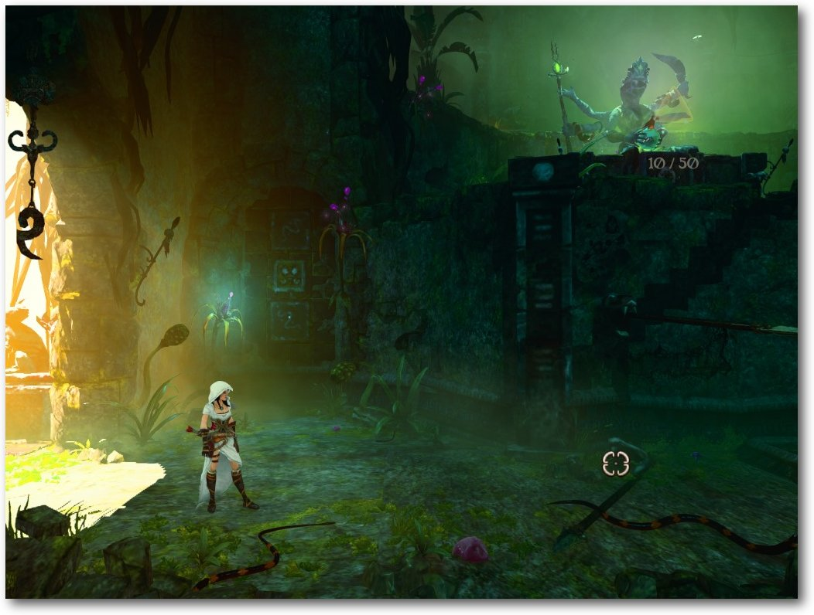Trine 3.
Door Kickers
Door Kickers [12] von KillHouse Games ist ein Echtzeit-Strategiespiel, bei dem man ein SWAT-Team [13] in verschiedenen Einsätzen steuert. In einer Vogelperspektive analysiert man die Umgebung, plant das Vorgehen, um die Geiseln zu befreien. Da es sich um ein Spiel in Draufsicht handelt, ist die Grafik etwas vereinfacht, aber dennoch sehr detailliert, sodass es auch Spaß macht, zuzuschauen und zu spielen. Die Musik treibt das Spiel dabei an, sodass man die recht kurzen Missionen schnell abschließen kann. Zusätzlich ist das Spiel selbst noch auf Deutsch, sodass man die Steuerung schnell erlernen kann. 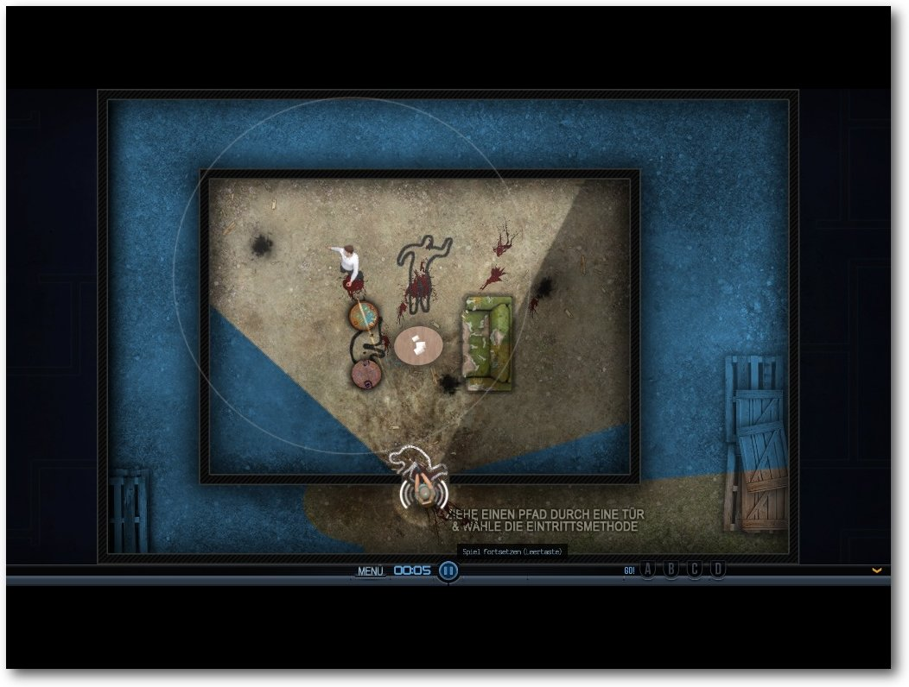Door Kickers.
Else Heart.Break()
Else Heart.Break() [14] des schwedischen Entwicklers Erik Svedäng [15] ist kein gewöhnliches Adventure. Als Hacker Sebastian lebt und erkundet man die 3-D-Welt von Dorisburg. Die Rätsel des Spiels kann man lösen, dass man sich in die Welt hackt und diese umprogrammiert. Leider steht das textlastige Spiel nur in Schwedisch und Englisch zur Verfügung, sodass es ohne ausreichende Sprachkenntnisse schwer wird, der Story zu folgen. 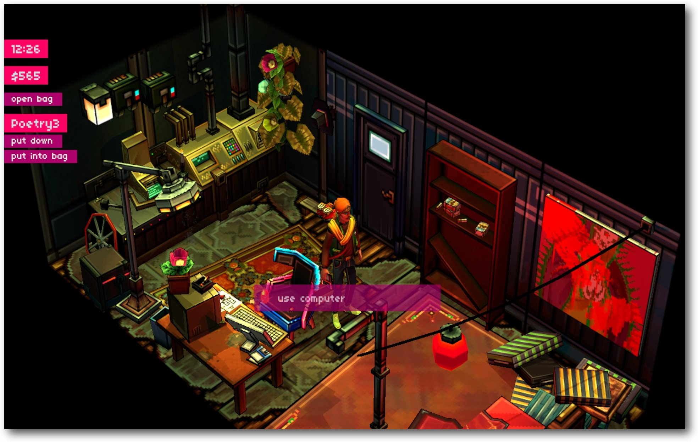Else Heart.Break().
Sunless Sea
Sunless Sea [16] von Failbetter Games ist ein Open-World-Exploration-Game. Im viktorianischen London schippert man mit seinem Dampfschimpf auf den unheilvollen Gewässern vor Englands Küste. Die individuelle Crew und die immer neu gestaltete Karte sorgen für zahlreiche interessante und düstere Momente, sei es beim Kampf gegen Riesenkrabben oder Piratenschiffe. Das Spiel steht leider nur in einer englischen Version zur Verfügung. Da es sehr viele Texte zu lesen gibt, sollte man der Sprache entsprechend gut mächtig sein, um „Sunless Sea“ überhaupt spielen zu können. 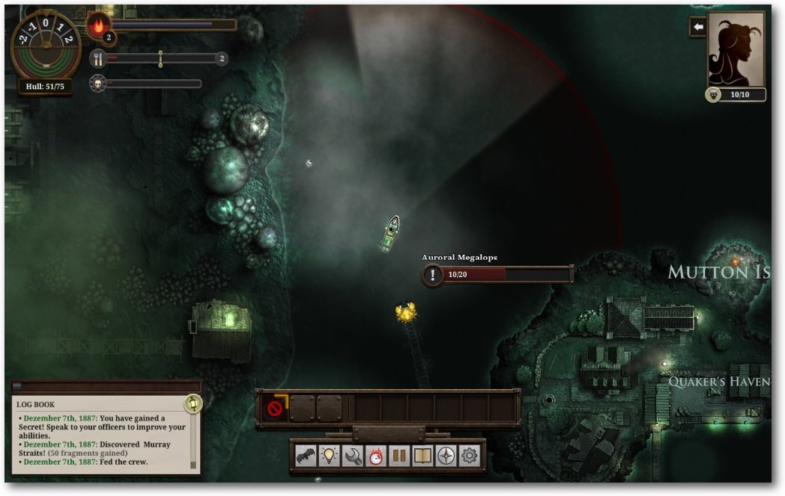Sunless Sea.
Duet
Duet [17] von Kumobius ist ein Geschicklichkeitsspiel, bei dem man nur die Pfeiltasten nach rechts und links benutzt, um zwei miteinander verbundenen Kugeln um gefährliche „Gegenstände“ rundherum zu manövrieren. Die Oberfläche des Spiels ist in Deutsch. 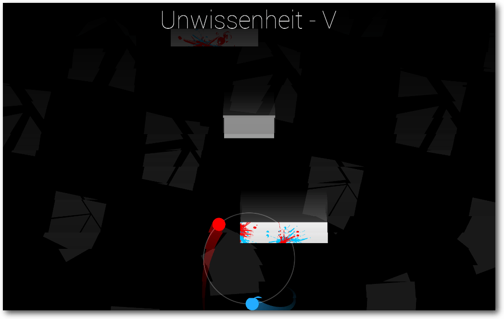Duet.
Forced
„Forced“ von BetaDwarf [18] ist ein Koop-Action-Rollenspiel mit einigen Puzzle- und Taktik-Elementen. Man übernimmt die Rolle eines Gladiators, der in der Arena und der Welt gegen andere Kämpfer, aber auch riesige Kreaturen antreten muss. Das Spiel kann mit bis zu drei Mitspieler bestritten werden, wobei diese lokal oder online teilnehmen können. Das Spiel steht zwar generell auch in Deutsch zur Verfügung, leider zeigen sich in den Menüs Grafikfehler, da die Schriftgröße auf ca. 100 eingestellt ist und man so nichts mehr erkennen kann. 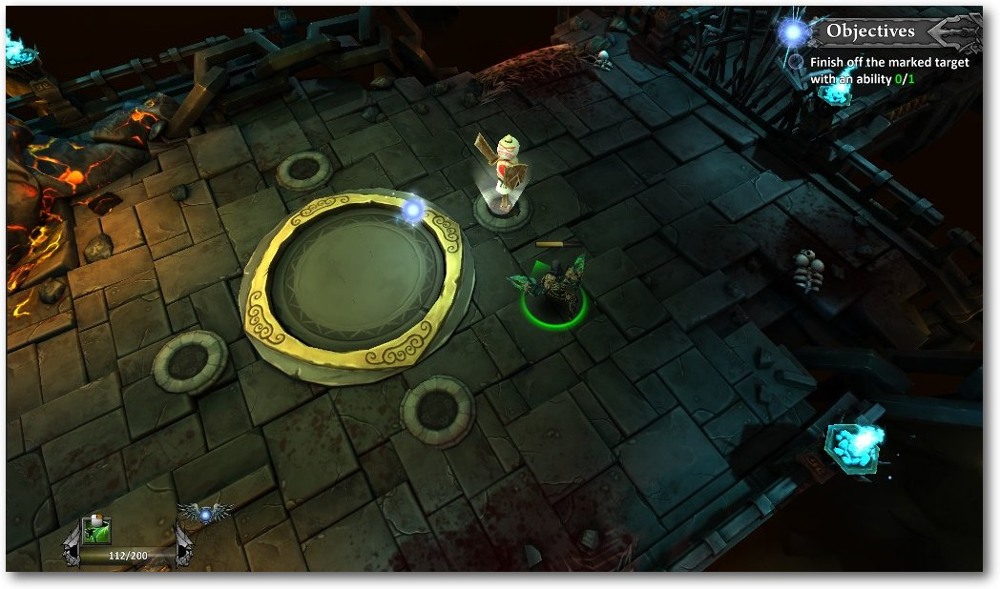Forced.
Bundle erwerben
Den Preis für die Spiele kann man selbst wählen, wobei einige nur zur Verfügung stehen, wenn man den mindestens den aktuellen Durchschnittspreis von (aktuell ca. 5,70 US-Dollar) bzw. zwei Dollar mehr als den Durchschnittspreis zahlt. Das bezahlte Geld kann man beim Kauf auf die einzelnen Entwicklerstudios, auf die Humble-Macher, die Electronic Frontier Foundation (EFF [19]) oder die Charity-Organisation Child's Play [20] aufteilen. Die Spiele stehen nach dem Kauf für Linux als Direktdownload oder BitTorrent-Link zur Verfügung. Zusätzlich gibt es für alle Spiele Steam-Keys. Bezahlen kann man mit Paypal, Amazon, Kreditkarte oder Bitcoins. Hinweis: Vor dem Kauf sollte man zu allen Spielen die Systemvoraussetzung für Linux lesen [21]. Für die Spiele „Never Alone“, „Trine 3“, „Else Heart.Break()“, „Duet“ und „Forced“ stehen zusätzlich noch die Soundtracks in MP3-Format zum Download bereit. Für „Duet“ und „Never Alone“ zusätzlich noch als Flac. Links[1] https://www.humblebundle.com/
[2] http://www.retrocityrampage.com/
[3] https://de.wikipedia.org/wiki/Grand_Theft_Auto
[4] http://www.redbarrelsgames.com/games/outlast/
[5] http://deesaster.org/blog/index.php?/archives/2531
[6] https://www.youtube.com/watch?v=LaCZg9nHMKs
[7] http://neveralonegame.com/
[8] https://de.wikipedia.org/wiki/I%C3%B1upiat
[9] http://www.freiesmagazin.de/freiesMagazin-2011-07
[10] http://www.freiesmagazin.de/freiesMagazin-2012-06
[11] http://www.frozenbyte.com/games/trine-3-the-artifacts-of-power
[12] http://inthekillhouse.com/doorkickers/
[13] https://de.wikipedia.org/wiki/SWAT
[14] http://elseheartbreak.com/
[15] http://www.eriksvedang.com/
[16] http://www.failbettergames.com/sunless/
[17] http://www.duetgame.com/
[18] http://www.betadwarf.com/
[19] https://www.eff.org/
[20] http://www.childsplaycharity.org/
[21] https://support.humblebundle.com/hc/en-us/articles/217321457
| Autoreninformation |
| Dominik Wagenführ (Webseite) ist Chefredakteur von freiesMagazin und kommt inzwischen nur zum Spielen, wenn er einen Artikel für das Magazin schreiben will. |
Beitrag teilen Beitrag kommentieren
Zum Inhaltsverzeichnis
Rezension: GIMP 2.8 – Für digitale Fotografie und Webdesign
von Martin Stock Im Buch „GIMP 2.8 – Für digitale Fotografie und Webdesign“ [1] geht es um das kostenlose Bildbearbeitungsprogramm GIMP. Der Leser lernt, worum es sich bei GIMP handelt und wie man es einsetzen kann. Redaktioneller Hinweis: Wir danken O'Reilly für die Bereitstellung eines Rezensionsexemplares.Inhalt
Mittlerweile gibt es schon die vierte Auflage des Buches. Darin gibt es fünf, unterschiedlich große, farblich markierte Abschnitte. Nach dem Inhaltsverzeichnis und einer kurzen Erklärung was GIMP ist und seit wann es das Bildbearbeitungsprogramm gibt, folgt der erste und größte Bereich der Ausgabe, den die Autorin Bettina K. Lechner „Gimpologie“ nennt. In der „Gimpologie“ werden die Arbeitsoberflächen und die dazugehörigen Werkzeuge beschrieben und erklärt. Hierzu gehören Themen wie zum Beispiel Dateimanagement, Ebenentechnik, Auswahltechniken oder Farben. Kleinere Beispiele verdeutlichen sehr gut die Erklärungen. Im zweiten Bereich des Buches wird die Praxis beschrieben. In den zahlreichen 41 Beispielen wird gezeigt, wie man in Fotos rote Augen entfernt, Lippen umfärbt, Himmel austauscht, Augenfarben verändert, alte Fotos restauriert oder Bilder aufhellt. Auch wer sich für Web- und Textdesign interessiert, kommt in diesem Buch nicht zu kurz, denn im dritten Bereich wird aufgezeigt, auf was man bei Web- und Textdesign beachten muss. Es werden unter anderem Beispiele für plastische Texteffekte oder stylisches Webdesign gezeigt. Den finalen Feinschliff bekommt man im namensgleichen vierten Bereich der Ausgabe. Dort findet man unter anderem die Themen Copyright-Stempel, Animation oder die Darstellung mehrerer Bilder auf einer Seite. Im letzten und fünften Bereich des Buches befindet sich der Anhang, außerdem werden Informationen über Erweiterungen mit Plug-ins und Skripten, Schriften hinzufügen, Ändern der Standardsprache, JPEG-Qualitätsstufen, Linktipps und das Stichwortverzeichnis angeboten. Weiterhin findet man dort alle Informationen über die Installation von GIMP 2.8 für Linux, Mac OS X und Windows.Wer liest das Buch?
Wer GIMP nicht kennt oder schon damit gearbeitet hat, aber sein Wissen vertiefen möchte, für denjenigen ist dieses Buch gemacht. Diejenigen, die einen sehr guten und einfachen Einstieg in digitale Bildbearbeitungen benötigen, finden zahlreiche interessante Themen. Auch Fortgeschrittene dürfen sich über diese Ausgabe freuen, denn es dient gleichzeitig als umfangreiches Nachschlagewerk, um das bisherige Wissen aufzufrischen.Wie liest sich das Buch?
Die Texte und Erklärungen sind verständlich und einprägsam geschrieben. Viele Bilder, Grafiken, Hinweisboxen und farblich markierte Bereiche helfen, sich in diesem Fachbuch zurechtzufinden. Es werden auch Bereiche angesprochen, die mit dem Bildbearbeitungsprogramm nichts zu tun haben, zum Beispiel die Druckgröße und Auflösung eines Bildes berechnen. Solche Zusatzinformationen stören aber den Textfluss nicht.Kritik
Im Buch wird unter anderem eine stylische Webdesignvorlage vorgestellt. Dort wird eine einfache Webseite mit Inhalten dargestellt. Wenn das Design fertig ist, weiß man als Nutzer nicht, wie man dann diese Vorlage weiter bearbeiten kann, um daraus wirklich eine funktionierende Webseite zu machen und online zu stellen. Dieser Teil fehlt, ein Hinweis wäre sinnvoll. Vielleicht hätte man auch in der Übung die ersten Schritte dazu zeigen können. Neben der Webdesignvorlage gibt es allerdings in diesem Buch sehr nützliche Hinweise über die Bearbeitung von digitalen Fotos für die Veröffentlichung im weltweiten Internet. Webdesigner sollten allerdings zu einem anderen Buch greifen, wenn sie sich über Grafiken und Designvorstellungen für Internetseiten informieren möchten. Das Stichwortverzeichnis am Ende des Buches ist gut gegliedert und man findet schnell die gewünschten Informationen.Fazit
Es ist ein kompaktes, umfassendes und sehr gutes Nachschlagewerk für Informationen und Beispielen, die sich mit GIMP befassen. Von A bis Z kann man sich mit Hilfe dieses Buches mit GIMP beschäftigen und lernt jedes Mal dazu. Die einprägsamen und verständlichen Texte und viele Bilder helfen bei den verschiedenen Erklärungen, ohne überladen zu wirken. Übungsmaterial kann von der Verlagswebseite heruntergeladen werden, um die Beispiele direkt anzuwenden. Das Buch kostet etwa 40 € im Handel. Allerdings kann man davon ausgehen, dass das investierte Geld gut angelegt ist. Der Preis, den man für dieses fundierte Wissen bezahlt, ist nicht zu hoch angesetzt.| Buchinformationen | |
| Titel | GIMP 2.8 – Für digitale Fotografie und Webdesign [1] |
| Autor | Bettina K. Lechner |
| Verlag | O'Reilly |
| Umfang | 408 Seiten |
| ISBN | 978-3-95561-475-1 |
| Preis | 39,90 € (Print), 32,00 € (E-Book) |
Links
[1] http://www.oreilly.de/catalog/gimpger/
| Autoreninformation |
| Martin Stock hat wenig Erfahrungen mit Foto- und Grafikbearbeitungen, konnte aber mit Hilfe des Buches hervorragende Kenntnisse erlangen, die er in der Praxis umsetzen wird. |
Beitrag teilen Beitrag kommentieren
Zum Inhaltsverzeichnis
Rezension: Network Attacks and Exploitation
von Martin Stegmeyer Der amerikanische Sicherheitsexperte Matthew Monte beschreibt in seinem Buch „Network Attacks and Exploitation“ [1] systematisch Aspekte der Sicherheit von Computernetzwerken. Er behandelt verschiedene Themen von alten Kriegsstrategen bis zu den raffiniertesten aktuellen Computer-Angriffen. Redaktioneller Hinweis: Wir danken dem Wiley-Verlag für die Bereitstellung eines Rezensionsexemplares.Inhalt, Aufteilung und Stil
In neun Kapiteln werden die theoretischen Grundlagen von Angriffen auf Computernetzwerke erläutert und die Sichtweise sowohl des Angreifers als auch des Verteidigers dargestellt. Aspekte der jeweiligen Rolle bezogen auf Knowhow, Motivation, Auswirkungen von Fehlern etc. werden sehr anschaulich dargestellt. Strategien beider Seiten werden analysiert und Fallstudien dargelegt. Im Anhang geht der Autor auf verschiedene Angriffswerkzeuge wie Backdoor, Bootkit, Keylogger etc. ein. Verweise auf die Fußnoten mit vielen Hyperlinks zu einschlägigen Informationsquellen findet der Leser am Ende des Buches. Das Buch liegt in englischer Sprache vor. Der Leser mit Schulkenntnissen und Übung im Lesen von Computer-Handbüchern wird das eine oder andere Wort nachzuschlagen müssen. Der Schreibstil ist ansprechend und keineswegs trocken. Man mag sich wundern, dass der preußische General Carl von Clausewitz erwähnt wird – aber seine Theorien zu Strategie und Taktik werden bis heute gelehrt. Aktueller scheint da schon Kevin Mitnick, der in den 1980er-Jahren als Hacker für Furore gesorgt hat. Der Inhalt erstreckt sich über Strategien und Wirkungsweise von Computerangriffen bis zur Beschreibung von aktuellen Schadprogrammen wie Stuxnet [2] und Flame [3] und Schwachstellen wie Heartbleed [4]. Bei den sparsam verwendeten Abbildungen handelt es sich meist um Grafiken zum Verdeutlichen von Zusammenhängen und Abläufen. Das alltägliche Verhalten wird kritisch betrachtet – sowohl das von unbesorgten Anwendern als auch von Computer-Experten, die viele Angriffsmöglichkeiten auf Computernetzwerke nicht kennen oder nicht ernst nehmen. So beschweren sich zwar Anwender, die zu wenig Berechtigungen für ihre Arbeit haben – aber niemand, der mehr darf als er soll (z. B. nach einem Wechsel der Tätigkeit). Firmennetzwerke sind üblicherweise durch Firewalls geschützt. Um trotzdem in das Netzwerk zu gelangen, ist es selten zielführend, diese Firewall anzugreifen und zu manipulieren. Es gibt viel einfachere Wege: Verteilt man auf einem Parkplatz entsprechend präparierte USB-Sticks, so wird mit hoher Wahrscheinlichkeit jemand diesen an seinem Firmen-PC anschließen – und schon ist der PC infiziert und dem Angreifer wird ein Zugang eingerichtet. Dass es mitunter schon ausreicht, eine infizierte E-Mail in der Vorschau zu betrachten, um Schadprogramme einzuschleusen, ist den meisten Anwendern nicht bewusst. Einige Aspekte werden aus Sicht des Angreifers und des Verteidigers geschildert. Wenn Begriffe wie Betriebssicherheit vorkommen, vermutet man zunächst den regulären Systembetrieb von Computern einer Firma. Hier wird der Begriff jedoch auch mit dem Angreifer in Zusammenhang gebracht. Das Schadprogramm darf dem Administrator bzw. den Abwehrsystemen nicht auffallen, soll jedoch einen zuverlässigen Zugriffspfad für den Angreifer bereitstellen. Die Motivation von Angreifer und Verteidiger sind sehr unterschiedlich. Der Angreifer hat zweimal Erfolg: zuerst wenn er eingebrochen ist und dann, wenn er nicht erwischt wird. Der Verteidiger dagegen muss monotone Arbeiten durchführen: Logfiles durchsuchen und Updates installieren.Für wen ist das Buch geeignet?
Das Buch richtet sich an IT-Entscheider, IT-Fachleute und Menschen, die Sicherheitsrichtlinien erstellen. Wer nach der Lektüre von Fachartikeln, Pressemeldungen oder Vorträgen zum Thema IT-Sicherheit Orientierung sucht, der empfindet die systematische Analyse der Zusammenhänge als Bereicherung. Die Einschätzung der Gefährdung durch Cyberangriffe reicht auch unter Fachleuten von „Wir haben eine Firewall – also ist alles sicher.“ bis zur Befürchtung, dass man als Administrator gegen die Vielzahl von Angriffen machtlos ist. Hier wird eine Vielzahl von Schwachstellen erläutert, aber es werden auch einige Maßnahmen zur Absicherung vorgestellt.Fazit
Man wird nach der Lektüre einige Aspekte des Alltags von Computernetzwerken neu betrachten. Es ist eine gute Ergänzung zu Fachbüchern, die den Schwerpunkt auf technische Aspekte von Schwachstellen, Angriffen und Abwehrmaßnahmen legen, wie beispielsweise „Network Hacking“ aus dem Franzis-Verlag (Rezension in freiesMagazin 04/2015 [5]) oder das „Snort Cookbook“ von O'Reilly [6].| Buchinformationen | |
| Titel | Network Attacks and Exploitation [1] |
| Autor | Matthew Monte |
| Verlag | Wiley, 1. Auflage 2015 |
| Umfang | 198 Seiten |
| ISBN | 978-1-118-98712-4 |
| Preis | 44,90 € (Print), 36,99 € (E-Book) |
Links
[1] http://www.wiley-vch.de/publish/dt/books/ISBN1-118-98712-8/
[2] https://de.wikipedia.org/wiki/Stuxnet
[3] https://de.wikipedia.org/wiki/Flame_(Schadprogramm)
[4] https://de.wikipedia.org/wiki/Heartbleed
[5] http://www.freiesmagazin.de/freiesMagazin-2015-04
[6] http://shop.oreilly.com/product/9780596007911.do
| Autoreninformation |
| Martin Stegmeyer befasst sich seit vielen Jahren mit Netzwerken für Industrie-Steuerungen und deren Sicherheit. |
Beitrag teilen Beitrag kommentieren
Zum Inhaltsverzeichnis
Rezension: Linux Essentials
von Christian Nelke Der Schwerpunkt des Buches „Linux Essentials“ [1] liegt darauf die Inhalte, die für die Linux-Essentials-Zertifizierung des „Linux Professional Institute“ (LPI [2]) benötigt werden, zu vermitteln. Darüber hinaus werden viele Aspekte besprochen, die es ermöglichen, die Inhalte in der Praxis anzuwenden und miteinander zu verknüpfen. Redaktioneller Hinweis: Wir danken dem Wiley-Verlag für die Bereitstellung eines Rezensionsexemplares.Für wen ist das Buch?
Wie der Titel verrät, richtet sich das Buch hauptsächlich an Leser, die die Zertifizierung „Linux Essentials“ machen möchten. Darüber hinaus eignet es sich ebenfalls sehr gut für alle, die bereits Linux nutzen und ihre Kenntnisse vertiefen wollen oder einen Umstieg von einem anderen Betriebssystem in Erwägung ziehen. Auch fortgeschrittene Benutzer mit mehr Erfahrung finden weitere Anregungen, sich mit neuen Linux-Themen zu beschäftigen.Inhalt und Aufbau
Die Kapitel des Buches sind so angeordnet und strukturiert, dass die Inhalte aufeinander aufbauen und in sich abgeschlossen sind. Somit kann der Leser je nach Kenntnisstand Kapitel gezielt lesen oder überspringen. Einsteiger können sich zum Beispiel über die Geschichte von Linux informieren, sich mit verschiedenen Softwarelizenzen beschäftigen oder sich Hilfestellung bei der Suche nach der geeigneten Distribution holen, während fortgeschrittene Benutzer sich mit Themen wie Shell-Skripten oder Administratortätigkeiten beschäftigen können. Wird in einem Kapitel ein Thema angeschnitten, welches bereits vorher besprochen wurde oder später besprochen wird, findet man immer einen Verweis, um sich bei Bedarf (nochmals) in dieses Thema einlesen zu können. Dieser Aufbau ermöglicht es, das Buch mit reinem Schulenglisch zu lesen, da benötigte Fachbegriffe im Verlauf des Buches stets eingeführt und erklärt werden, bevor sie benutzt werden. Das Buch behandelt die angesprochenen Themen nicht in erschöpfender Tiefe, sondern vermittelt essentielles Wissen um die im Alltag anfallenden Tätigkeiten als Benutzer oder Administrator erledigen zu können. Hierbei werden nicht nur Beispiele besprochen, sondern auch Hilfe zur Selbsthife gegeben. Das Thema Manpages wird zum Beispiel nicht nur mit Erklärung des man-Befehls abgearbeitet, sondern es werden auch Tipps gegeben, wie man mit whatis und ähnlichen Aufrufen an weiterführende Informationen gelangen kann. Den Autoren ist es sehr gut gelungen, die Informationen allgemeingültig zu halten und somit den Lesern unabhängig von der gewählten Distribution behilflich zu sein. Im Kapitel „Selecting an Operation System“ wird beispielsweise nach der Vorstellung einiger weit verbreiteten Distributionen eine Hilfestellung gegeben, nach welchen Kriterien man bei der Auswahl entscheiden kann. Die konsequent eingehaltenen Darstellungskonventionen vereinfachen die Unterscheidung zwischen Informationen, Konsolenbefehlen und ähnlichen Inhalten stark. Darüber hinaus werden Themen, die in der Zertifizierungsprüfung benötigt werden, durch besondere Markierungen deutlich hervorgehoben.Fazit
Abschließend ist zu sagen, dass es den Autoren gelungen ist, alle wichtigen Grundlagen in diesem Buch zu erfassen. Wer seinen Schwerpunkt auf ein spezielles Thema setzen möchte und dieses in allen Details kennenlernen will, sollte zusätzlich zu anderen Lektüren greifen, die sich speziell mit diesem Thema beschäftigen. Hilfreiche Informationsquellen werden oftmals genannt. Redaktioneller Hinweis: Da es schade wäre, wenn das Buch bei Christian Nelke nur im Regal steht, wird es verlost. Die Gewinnfrage lautet: „Welcher Befehl, der aus drei Buchstaben besteht, öffnet das Handbuch zu fast allen Programmen?“ Die Antwort kann bis zum 13. März 2016, 23:59 Uhr über die Kommentarfunktion oder per E-Mail an| Buchinformationen | |
| Titel | Linux Essentials [1] |
| Autor | Christine Bresnaham, Richard Blum |
| Verlag | Wiley-VCH, 2. Auflage 2015 |
| Umfang | 360 Seiten |
| ISBN | 978-1-119-09206-3 |
| Preis | 38,90 € (Print) / 24,99 € (E-Book) |
Links
[1] http://www.wiley-vch.de/publish/dt/books/ISBN1-119-09206-X/
[2] https://www.lpice.eu/
| Autoreninformation |
| Christian Nelke nutzt seit einigen Jahren hauptsächlich Linux als Betriebssystem und interessiert sich für Verschlüsselung und Datenschutz. |
Beitrag teilen Beitrag kommentieren
Zum Inhaltsverzeichnis
Rezension: Linux Bible
von Werner Ziegelwanger An ein Buch mit dem Titel „Linux-Bibel“ stellt man hohe Ansprüche. Unter einer Bibel erwartet man sich als Leser eine allumfassende Glaubensgrundlage. Man muss dort alle wichtigen Linux Befehle finden, man muss sie gut lesen können und gleichzeitig auch recht einfach Informationen darin finden können. Ob das alles auf dieses Buch zutrifft, soll diese Rezension zeigen. Redaktioneller Hinweis: Wir danken dem Wiley-Verlag für die Bereitstellung eines Rezensionsexemplares. Das Buch „Linux Bible“ [1] wird vom Wiley-Verlag herausgegeben und wurde von Christopher Negus geschrieben. Diese Rezension bezieht sich auf die aktuelle neunte Auflage. Schon anhand der hohen Nummer kann man erkennen, dass sich dieses Buch recht gut verkaufen muss. Der Autor aktualisiert laufend Kapitel und fügt gegebenenfalls weitere Kapitel hinzu. Mit über 1000 Seiten ist dieses Buch wohl eines der umfassendsten Linux Fachbücher.Über den Autor
Christopher Negus stellt sich in den ersten Kapiteln des Buches selbst vor und schildert wie es zu diesem Buch gekommen ist. Als Linux-Trainer hatte er lange Jahre Zeit, sein Lehrmaterial zu verfeinern und lernte von seinen Schülern, worauf es besonders ankommt. Aus der Notwendigkeit ein gutes Skript für seinen Kurs zu haben, entwickelte sich die erste Version des Buches. Da er selbst für RedHat Linux arbeitet und sein Kurs als Vorbereitung für die offizielle RedHat-Linux-Zertifizierung dient, bezeichnet er sein Buch selbst als optimale Prüfungsvorbereitung. Laut seinen Aussagen findet man als Leser alle Informationen um diese RedHat-spezifische Prüfung zu meistern. Aus diesem Grund beziehen sich die Beispiele und Erläuterungen hauptsächlich auf RedHat Linux beziehungsweise dessen Open-Source-Variante Fedora. Bei Stellen, die sich massiv von anderen Linux-Distributionen unterscheiden, wie beispielsweise die Paketmanager, führt er zusätzlich noch Beispiele und weiterführende Informationen für Debian-Derivate an.Der Inhalt
Die ersten Kapitel
Das Buch richtet sich an Interessierte, die Linux richtig lernen wollen. Ob man nun vor hat die Zertifizierung zu machen oder nicht, ist dabei weniger relevant. Die Themen sind aufbauend in Kapitel gegliedert, die selten aufeinander Bezug nehmen. Im ersten Teil lernt man, was Linux ist, worin es sich von anderen Betriebssystemen unterscheidet und was Vor- beziehungsweise Nachteile von Open-Source-Systemen sind. Besonders interessant wird die Entstehungsgeschichte von GNU/Linux und BSD im Kontext von UNIX beschrieben. Das ist technisch wenig interessant, man erkennt aber zahlreiche Zusammenhänge und versteht besser, warum Linux das ist, was es heute ist. Zum Abschluss wird noch gezeigt, wie ein Anwender heute Linux aus Sicht des grafischen Desktops sieht und welche Standardsoftware, grafische Systeme und Einstellungen es für Fedora gibt.Grundlagen
Nach dem interessanten und sanften Einstieg in die Linux-Welt bekommt man in sieben technischen Kapiteln alles Wissenswerte über die Linux-Shell und die Ressourcen beigebracht, mit denen Linux (der Kernel) arbeitet. Man lernt Kommandos kennen, die jeder Linux-Anwender und -Administrator täglich benutzt. Weiter bekommt man einen Einblick in Dateisysteme, Prozesse, Shell-Scripts und wie man als Anwender damit umgeht. Besonderen Wert wird auf vi beziehungsweise vim gelegt.Linux-Administrator
Nach anstrengenden und recht trockenen Grundlagen folgen spannende Linux-Administrator-Kapitel, in denen man lernt, wie man Linux installiert, Festplatten partitioniert, Software installiert und aktualisiert, und wie man mit Benutzeraccounts umgeht. Ziel des Kapitels ist, dass man selbstständig ein eigenes Linux-System zuhause oder im Büro aufsetzen und verwalten kann.Server-Administration
Der wichtigste Abschnitt des Buchs behandelt die Server-Administration. Da RedHat Linux ein Business-System ist, wird es hauptsächlich im Server-Bereich eingesetzt. Die Kapitel zur Server-Administration vermitteln dem Leser ein fundiertes Wissen über alle möglichen Serverarten (Web, File, FTP, Print, NFS, ...). Besonderer Wert wird auf die Konfiguration gelegt in Bezug auf Sicherheit. Diese Kapitel eignen sich später besonders gut als Nachschlagewerk, da sie im Unterschied zu Online-Artikeln eine fundierte und vor allem sichere Basis liefern.SELinux
Sicherheit ist einer der roten Fäden, die sich durch das Buch quer durch alle Kapitel ziehen. Immer wieder wird schon vorab auf diesen Abschnitt Bezug genommen. In den Kapiteln zu SELinux wird ausführlich erklärt, wie man die Sicherheit vom System allgemein erhöht und welche Tools und Konfigurationseinstellungen es gibt, um eine sichere Infrastruktur im Unternehmen zu schaffen.Cloud
Im letzen Abschnitt geht es in die Cloud. Man bekommt einen Einblick in den modernen Bereich des Cloud Computing und wie Linux in dem Bereich eingesetzt wird. In einem sehr praxisnahen Kapitel wird gezeigt, wie man selbst Linux in einer Cloud betreiben kann.Meinung
Das Buch ist recht flüssig in einem Stück durchzulesen. Besonders gut gefällt, dass die Kapitel themenbezogen aufgebaut sind, im Unterschied zu anderen Fachbüchern aber sehr umfangreich und vollständig. Benötigt man zum Beispiel Informationen, wie man einen Webserver unter Fedora einrichtet, ist das Webserver-Kapitel allein die perfekte Quelle der Recherche. Jedes Kapitel hat neben einer netten Einleitung, in der man einen realen Praxisbezug bekommt, auch immer eine gute Zusammenfassung. Nach der Zusammenfassung gibt es immer Fragen, die man theoretisch beantworten oder auch sehr oft selber praxisorientiert am Rechner lösen kann. Diese Fragen sind besonders auf die Zertifizierung ausgelegt. Die Beispiele im Buch zeigen fast immer nicht nur einen einfachen Aufruf eines Kommandos sondern mehrere praxisorientierte, teils recht komplexe Beispiele. Diese werden samt Ergebnis dargestellt und in einem Text recht genau beschrieben. Es gibt einige Stellen im Buch, an denen man sehr stark merkt, dass es sich um ein schon älteres Buch handelt, das immer wieder überarbeitet wurde, wenn beispielsweise von Systemressourcen wie 400 MHz und 32 MB RAM gesprochen wird. Im Gegensatz dazu gibt es aber auch Kapitel zur Virtualisierung oder Cloud Computing, die sehr modern sind und in vielen vergleichbaren Büchern gar nicht erwähnt werden.Fazit
Die Linux-Bibel ist mit über 900 Seiten sehr umfangreich und bietet einem Einsteiger alle Informationen, die in der Linux-Welt von Bedeutung sind. Auch für Leser, die bereits Erfahrung mit Linux haben, ist das Buch zu empfehlen. Es bereitet zum einen auf die RedHat-Zertifizierung vor und bietet zum anderen auch ein gutes Nachschlagewerk – vor allem, wenn man mit einer RedHat-verwandeten Linux-Distributionen arbeitet.| Buchinformationen | |
| Titel | Linux Bible [1] |
| Autor | Christoper Negus |
| Verlag | Wiley, 2015 |
| Umfang | 912 Seiten |
| ISBN | 978-1-118-99987-5 |
| Preis | 49,90 € (Print), 34,99 € (E-Book) |
Links
[1] http://www.wiley-vch.de/publish/en/books/ISBN978-1-118-99987-5/
| Autoreninformation |
| Werner Ziegelwanger (Webseite) hat Game Engineering und Simulation studiert. Schon während seiner Ausbildung beschäftigte er sich immer wieder mit Open Source und Linux. |
Beitrag teilen Beitrag kommentieren
Zum Inhaltsverzeichnis
Veranstaltungskalender
| Messen | ||||
| Veranstaltung | Ort | Datum | Eintritt | Link |
| Chemnitzer Linux-Tage | Chemnitz | 19.03.–20.03.2016 | – | http://chemnitzer.linux-tage.de/ |
| Easterhegg | Salzburg | 25.03.–29.03.2016 | 42 EUR | https://eh16.easterhegg.eu/ |
| Augsburger Linux-Infotag | Augsburg | 16.04.2016 | frei | http://www.luga.de/ |
| Linuxwochen Wien | Wien | 28.04.–30.04.2016 | frei | http://linuxwochen.at/ |
| MiniDebConf Vienna | Wien | 28.04.–01.05.2016 | frei | http://debienna.at/minidebconf_vie2016/ |
| Grazer Linuxtage | Graz | 29.04.–30.04.2016 | frei | http://www.linuxtage.at/ |
| VCF Europa | München | 30.04.–01.05.2016 | – | http://www.vcfe.org/ |
| LUG-Camp | Bruchsal | 05.05.–08.05.2016 | 75 EUR | https://lugcamp.lugbruchsal.de/ |
| UnFUCK | Furtwangen | 05.05.–08.05.2016 | frei | http://www.unfuck.eu/ |
| Linuxwochen Eisenstadt | Eisenstadt | 20.05.–21.05.2016 | frei | http://linuxwochen.at/ |
Vorschau
freiesMagazin erscheint am ersten Sonntag eines Monats. Die April-Ausgabe wird voraussichtlich am 3. April u. a. mit folgenden Themen veröffentlicht:- Rezension: R For Dummies
- Rezension: Datenanalyse mit Python
Konventionen
An einigen Stellen benutzen wir Sonderzeichen mit einer bestimmten Bedeutung. Diese sind hier zusammengefasst:| $: | Shell-Prompt |
| #: | Prompt einer Root-Shell – Ubuntu-Nutzer können hier auch einfach in einer normalen Shell ein sudo vor die Befehle setzen. |
| ~: | Abkürzung für das eigene Benutzerverzeichnis /home/BENUTZERNAME |
Impressum ISSN 1867-7991
freiesMagazin erscheint als PDF, EPUB und HTML einmal monatlich.Erscheinungsdatum: 6. März 2016
| Kontakt | |
| Postanschrift | freiesMagazin |
| c/o Dominik Wagenführ | |
| Beethovenstr. 9/1 | |
| 71277 Rutesheim | |
| Webpräsenz | http://www.freiesmagazin.de/ |
| Autoren dieser Ausgabe | |
| Mirko Lindner | Moneyplex 16 Business |
| Mathias Menzer | Der Februar im Kernelrückblick |
| Christian Nelke | Rezension: Linux Essentials |
| Martin Stegmeyer | Rezension: Network Attacks and Exploitation |
| Martin Stock | Typo3 im Einsatz, Rezension: GIMP 2.8 – Für digitale Fotografie und Webdesign |
| Jochen Stärk | Kurztipp: Freie Welten |
| Dominik Wagenführ | Humble Indie Bundle 16: Neun Spiele für Linux |
| Arndt Wiechens | XCOM 2 – Der Widerstand |
| Werner Ziegelwanger | Rezension: Linux Bible |
| Redaktion | |
| Christian Schnell | |
| Dominik Wagenführ (Verantwortlicher Redakteur) | |
| Satz und Layout | |
| Benedict Leskovar | Thomas Schwemm |
| Kai Welke | |
| Korrektur | |
| Daniel Braun | Frank Brungräber |
| Vicki Ebeling | Stefan Fangmeier |
| Mathias Menzer | Christian Schnell |
| Karsten Schuldt | |
| Veranstaltungen | |
| Ronny Fischer | |
| Logo-Design | |
| Arne Weinberg (CC-BY-SA 4.0 Unported) | |
Soweit nicht anders angegeben, stehen alle Artikel, Beiträge und Bilder in freiesMagazin unter der Creative-Commons-Lizenz CC-BY-SA 4.0 International. Das Copyright liegt beim jeweiligen Autor. Die Kommentar- und Empfehlen-Icons wurden von Maren Hachmann erstellt und unterliegen ebenfalls der Creative-Commons-Lizenz CC-BY-SA 4.0 International. freiesMagazin unterliegt als Gesamtwerk der Creative-Commons-Lizenz CC-BY-SA 4.0 Unported mit Ausnahme der Inhalte, die unter einer anderen Lizenz hierin veröffentlicht werden. Das Copyright liegt bei Dominik Wagenführ. Es wird erlaubt, das Werk/die Werke unter den Bestimmungen der Creative-Commons-Lizenz zu kopieren, zu verteilen und/oder zu modifizieren. Die xkcd-Comics stehen separat unter der Creative-Commons-Lizenz CC-BY-NC 2.5 Generic. Das Copyright liegt bei Randall Munroe.
Zum Inhaltsverzeichnis
File translated from TEX by TTH, version 3.89.
On 5 Mar 2016, 23:47.